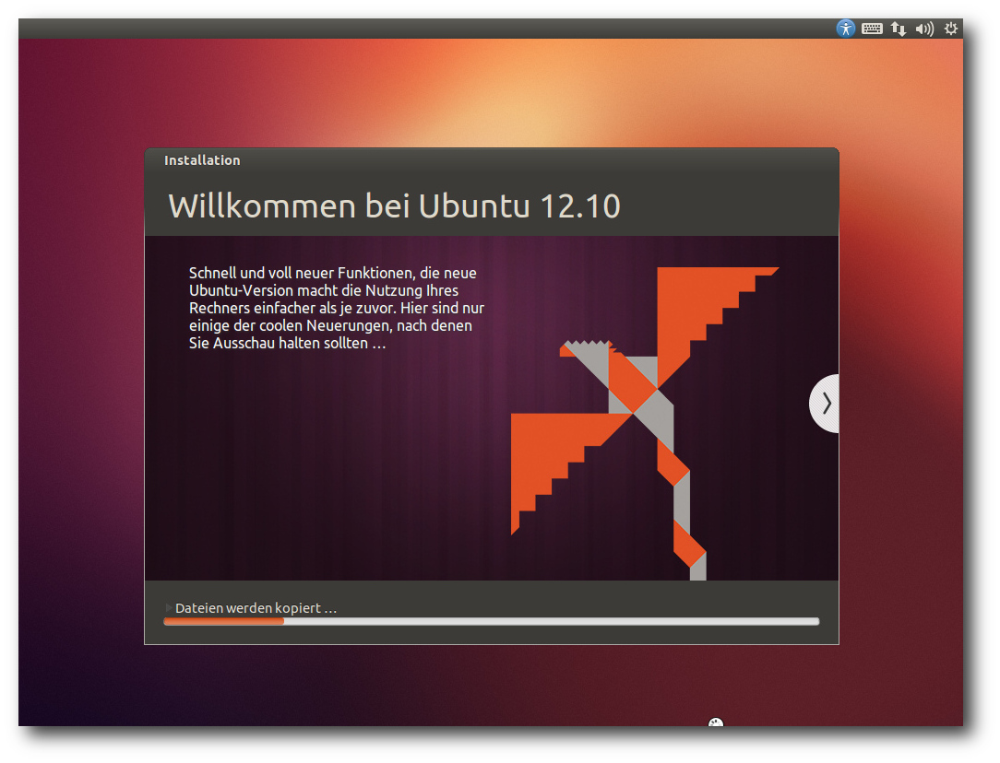
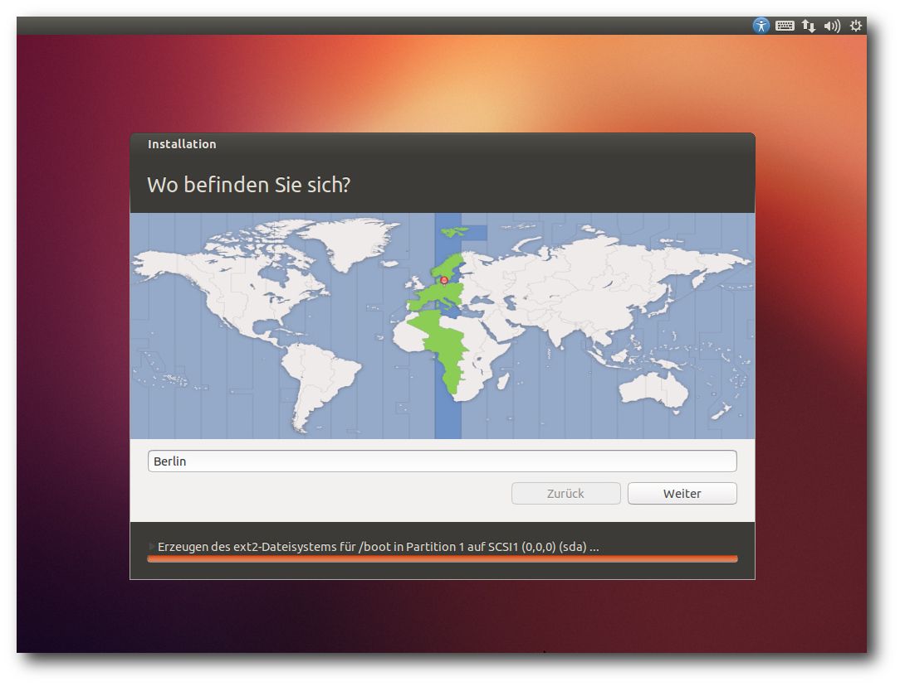
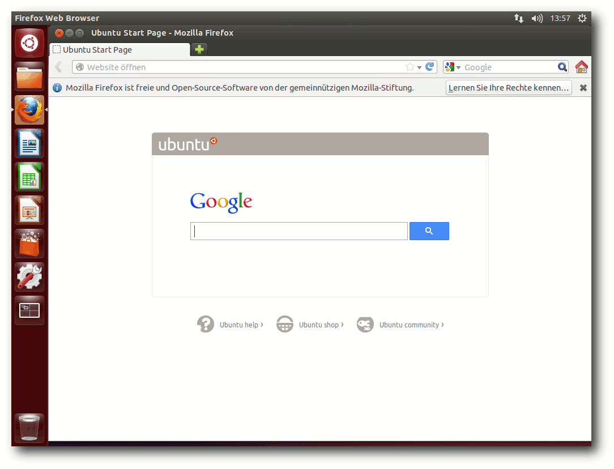
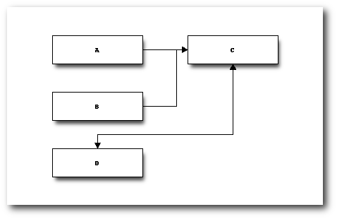

freiesMagazin Januar 2013
(ISSN 1867-7991)
Topthemen dieser Ausgabe
Ubuntu und Kubuntu 12.10Das neue Ubuntu 12.10 „Quantal Quetzal“ erweist sich trotz der teilweise umstrittenen Neuerungen und einiger Baustellen als weitgehend solide Veröffentlichung. In dem Artikel sollen die wichtigsten Neuerungen im Detail betrachtet werden, darunter unter anderem Unity und KDE sowie die Multimedia-Eigenschaften der Distribution. (weiterlesen)
Desktop Publishing unter Linux – Dann klappt's auch mit der Druckerei!
Unter Linux etwas zu drucken, ist im Allgemeinen kein Problem: Drucker anschließen, eventuell noch einen Treiber installieren und losdrucken. Problematisch wird es allerdings, wenn man Größeres vorhat – zum Beispiel Werbeanzeigen oder einen Flyer drucken zu lassen. Was es dabei zu beachten gibt und wie man mit Scribus und Co. gute Ergebnisse erzielt, beschreibt dieser Artikel. (weiterlesen)
Zum Index
Inhalt
Linux allgemeinUbuntu und Kubuntu 12.10
Der Dezember im Kernelrückblick
Anleitungen
Desktop Publishing unter Linux – Dann klappt's auch mit der Druckerei!
Software
blockdiag – Diagramme einfach erstellen
Kontinuierliche Integration mit Jenkins
Magazin
Editorial
Leserbriefe
Veranstaltungen
Konventionen
Impressum
Zum Index
Editorial
Immer noch Autoren gesucht
Im Editorial der letzten Ausgabe freiesMagazin 12/2012 sowie auf unserer Webseite [1] haben wir um neue Autoren geworben. Es gab auch schon ein paar Rückmeldungen, dennoch wollen wir noch einmal darauf aufmerksam machen, dass es ohne Autoren ebenso wie ohne Leser kein Magazin geben kann. Aus dem Grund gibt es gleich zum Anfang des neuen Jahres leider nur fünf Artikel. Diese sind qualitativ alle großartig, dennoch ist die Anzahl sehr übersichtlich. Wir bitten also alle Leser darum, zu überlegen, ob sie nicht das ein oder andere oft verwendete und nicht allzu bekannte Programm vorstellen wollen. Oder vielleicht gibt es ein kleines Skript, was einem jeden Tag gute Dienste erweist und mit der Gemeinschaft geteilt werden soll. Wer Lust und Zeit hat, kann sich unterJahresarchiv auch für EPUB
Ebenfalls noch in der letzten Ausgabe hatten wir ohne große Ankündigung den Jahresindex 2012 vorgestellt. Später folgten auf der Webseite [2] neben dem Index 2012 auch alle PDF-Ausgaben des Jahres gepackt in einem Archiv. Wir stellten uns darauf aber die Frage, ob es überhaupt einen Verwendungszweck für dieses Archiv gibt. Aus dem Grund starteten wir einen Umfrage, die zwei Wochen lief [3]. Wir haben die Umfrageantworten viergeteilt, sodass man daraus zwei Fragen beantworten konnte: „Wird das PDF-Jahresarchiv benötigt? Und ist ggf. auch ein EPUB-Archiv sinnvoll?“ Leider ist bei der Erstellung der Umfrage ein Fehler unterlaufen, sodass die Teilnehmer mehrere Lösungen ankreuzen konnten, obwohl dies gar nicht sinnvoll war. Dennoch kann man daraus ablesen, dass ein Großteil (über 60 %) das PDF-Jahresarchiv nutzt und dass immerhin noch gute 40 % auch einem EPUB-Archiv nicht abgeneigt wären. Aus dem Grund bieten wir ab diesem Jahr auch zwei Archive mit allen EPUB-Ausgaben an [4] – ein Archiv mit den „vollständigen“ EPUBs mit Bildern und ein schlankeres Archiv mit den EPUB-Ausgaben ohne Bildern. So kann jeder für sich die richtige Wahl treffen. Ein einzelnes EPUB mit allen 12 Ausgaben wäre für uns zu viel Arbeit und der Mehrwert wäre vermutlich zu gering, da vor allem bei der EPUB-Version mit Bildern die Dateigröße viel zu groß wäre und die meisten mobilen Lesegeräte ein Problem damit bekommen würden. Bei der Umfrage kam auch die Frage nach einer HTML-Version auf [5]. Uns erreichen ab und an Anfragen, dass man die HTML-Version sowieso etwas aufbessern sollte und jeden Artikel auf 1.2em]Magazin/13_01_inhalteiner extra Seite mit einem ordentlichen Menü auf der linken Seite darstellen sollte. Leider fehlt uns hierzu das Wissen bzw. die Zeit, um dies vernünftig umzusetzen. Eine Integration in unsere Webseite (mit CMS Drupal) wäre wünschenswert, ist aber von uns nicht machbar. Ebenso wünschen sich unsere Leser die Möglichkeit der automatischen Extraktion von Einzel-Artikeln aus einer PDF-Ausgabe zur einfachen Archivierung [6]. Auch dieses Projekt existiert schon länger in unseren Köpfen, kann aber von uns nicht umgesetzt werden. Wer sich also befähigt fühlt, dies umzusetzen, kann sich gerne bei uns unterNeues vom sechsten Programmierwettbewerb
Der sechste freiesMagazin-Programmierwettbewerb [7] läuft bereits einen Monat und hat schon viel Interesse geweckt. Mit den ersten Einreichungen wurden aber natürlich auch kleine Fehler aufgedeckt, bei denen versucht wird, diese immer schnell zu beheben. Aus diesem Grund sollte jeder (potenzielle) Teilnehmer auch immer die RSS-Kommentarseite zum Wettbewerb im Auge behalten [8], um immer auf dem neuesten Stand zu sein. So gab es bisher eine Wettbewerbsergänzung, nach der jeder Teilnehmer zusätzlich eine Insel mit einreichen darf, die auch im Wettbewerb mit genutzt wird [9]. Daneben gab es Probleme mit der Laufzeit einiger Bots, sodass hier eine größere Beschränkung als vormals angedacht gesetzt werden musste [10]. Es sind noch knapp vier Wochen Zeit, um am Wettbewerb teilzunehmen. Wir freuen uns über jede weitere Einsendung! Und nun wünschen wir Ihnen viel Spaß beim Lesen der neuen Ausgabe. Ihre freiesMagazin-Redaktion Links[1] http://www.freiesmagazin.de/20121126-freiesmagazin-sucht-autoren
[2] http://www.freiesmagazin.de/20121219-index-und-komplettausgabe-2012-erschienen
[3] http://www.freiesmagazin.de/20121219-ist-ein-komplettes-jahresarchiv-sinnvoll
[4] http://www.freiesmagazin.de/20121230-epub-komplettausgabe-2012
[5] http://www.freiesmagazin.de/node/303/results#comment-2780
[6] http://www.pro-linux.de/news/1/19181/comm/1/show-all-comments.html
[7] http://www.freiesmagazin.de/sechster_programmierwettbewerb
[8] http://www.freiesmagazin.de/crss/node/295
[9] http://www.freiesmagazin.de/20121223-erweiterung-zum-programmierwettbewerb
[10] http://www.freiesmagazin.de/20121227-wichtige-regelaenderung-zur-laufzeit
Das Editorial kommentieren
Zum Index
Ubuntu und Kubuntu 12.10
von Hans-Joachim Baader Das neue Ubuntu 12.10 „Quantal Quetzal“ erweist sich trotz der teilweise umstrittenen Neuerungen und einiger Baustellen als weitgehend solide Veröffentlichung. Im Folgenden sollen die wichtigsten Neuerungen im Detail betrachtet werden. Redaktioneller Hinweis: Der Artikel „Ubuntu und Kubuntu 12.10“ erschien erstmals bei Pro-Linux [1].Vorwort
Ein halbes Jahr nach Ubuntu 12.04 LTS (siehe „Ubuntu 12.04“, freiesMagazin 06/2012 [2]) wurde im Oktober Ubuntu 12.10 veröffentlicht. Es ist der Beginn eines neuen Zweijahreszyklus, der mit Ubuntu 14.04 LTS als neuer langfristig stabiler Version enden soll. Wie alle Versionen zwischen den LTS-Versionen soll auch „Quantal Quetzal“ 18 Monate lang unterstützt werden. Ubuntu bei der Installation.
Die neue Version bringt, in aller Kürze zusammengefasst, den Kernel Linux 3.5.5, die neuesten Versionen der Desktopumgebungen, viele neue bzw. aktualisierte Programme, vereinheitlichte Installation durch Integration fast aller Funktionen in das Installationsprogramm Ubiquity und verkleinerte Installations-Images für Server. Auch die Desktopumgebung Unity wurde erweitert, allerdings in nicht unumstrittener Weise. So sorgte die Installation der „Shopping-Linse“, die die Suchfunktion in der Übersichtsseite auf Online-Angebote erweitert, für starke Bedenken bezüglich der Privatsphäre. Zudem wurde die ohne Hardwarebeschleunigung auskommende Variante „Unity 2D“ der Unity-Oberfläche entfernt. Es wird also, wie auch bei GNOME inzwischen erwogen wird, eine Hardware-3D-Beschleunigung vorausgesetzt, die notfalls mit llvmpipe emuliert werden kann. Im Rahmen des Möglichen sollen die Änderungen genauer betrachtet werden. Dabei wird sich dieser Artikel auf die Desktopumgebungen Unity und KDE beschränken. Wie immer sei angemerkt, dass es sich hier nicht um einen Test der Hardwarekompatibilität handelt. Es ist bekannt, dass Linux mehr Hardware unterstützt als jedes andere Betriebssystem, und das überwiegend bereits im Standard-Lieferumfang. Ein Test spezifischer Hardware wäre zu viel Aufwand für wenig Nutzen. Falls man auf Probleme mit der Hardware stößt, stehen die Webseiten von Ubuntu zur Lösung bereit. Da eine Erprobung auf realer Hardware nicht das Ziel des Artikels ist, werden für den Artikel zwei identische virtuelle Maschinen, 64 Bit, unter KVM mit jeweils 1024 MB RAM verwendet.
Installation
Ubuntu wird meist von einem Live-System aus installiert. Die erste Neuerung von Version 12.10 ist, dass es keine CD-Images mehr gibt, nur noch ein DVD-Image, das jetzt „Desktop-Image“ heißt, allerdings im Umfang so weit reduziert wurde, dass es noch auf eine 800-MB-CD passen würde. Ob das funktioniert, geht aus der Dokumentation nicht hervor. Auf jeden Fall kann das ISO-Image auf DVD oder einem USB-Medium verwendet werden. Auch die „Alternate“-CD ist abgeschafft, da jetzt endlich das Installationsprogramm Ubiquity die meisten Funktionen und die Flexibilität besitzt, die bisher nur in dem im Textmodus laufenden Installer zu finden waren. Eine Einschränkung gibt es zur Zeit: Software-RAID wird noch nicht unterstützt. Man muss es entweder nachträglich einrichten oder von der Alternate-CD von Ubuntu 12.04 installieren und dann ein Update machen. Das CD-Format hat nur noch Bestand für die verschiedenen Server-Images, die Versionen für ARM- und PowerPC-Systeme einschließen. Ferner sind die Images für ARM-Desktops jetzt normale Live-Systeme, die man von USB-Medien starten kann. Ein Teil der Images unterstützt Secure Boot, nämlich das Desktop-Image, der Server und Edubuntu. Die anderen Varianten erhalten diese Unterstützung erst in der nächsten Version. Für Ubuntu 12.10 werden dieses Mal 768 MB RAM für den Unity-Desktop als Mindestanforderung angegeben [3], doppelt so viel wie bisher. Für Kubuntu sollten es 512 MB RAM oder mehr sein. Das gleiche gilt jetzt auch für Xubuntu. Auch die Server-Edition wurde anspruchsvoller und verlangt jetzt 256 MB statt 128 MB. Man sollte allerdings generell mindestens so viel RAM haben, dass alle benötigten Anwendungen zugleich ohne zu swappen laufen können, denn nur so läuft das System vollständig flüssig.Auswahl der Partitionierung.
Hier soll nur die Installation von der Desktop-DVD kurz vorgestellt werden. Die Installation unterlag nur wenigen sichtbaren Änderungen gegenüber der letzten Version. Hauptsächlich wurde die Partitionierung erweitert, so dass man jetzt auch die Optionen zu LVM und Verschlüsselung besitzt, die früher nur auf der Alternate-CD zu finden waren. Standardmäßig wird nur eine einzige große Partition mit dem Dateisystem ext4 sowie eine Swap-Partition angelegt. Das bleibt auch so, wenn man LVM einsetzt. Will man seine Partitionierung selbst definieren, muss man „Etwas Anderes“ auswählen, wodurch das Partitionierungswerkzeug gestartet wird. Dort können die gängigen Dateisysteme einschließlich Btrfs ausgewählt werden. Direkt nach der Definition der Partitionen beginnt der Installer mit der Partitionierung und der Installation der Pakete im Hintergrund. Ein Fortschrittsbalken zeigt von hier an den Stand der Installation an. Parallel dazu kann man die Zeitzone auswählen und danach das gewünschte Tastatur-Layout einstellen. 
Auswahl der Zeitzone.
Im letzten Schritt gibt man seinen Namen, Anmeldenamen, Passwort und den Computernamen ein. Wenn zuvor bereits per DHCP ein Name ermittelt werden konnte, wird dieser als Vorgabe angezeigt. Wenn erkannt wird, dass die Installation in einer virtuellen Maschine läuft, wird dagegen der Name "benutzer-virtual-machine" vorgegeben. Optional können Daten im Home-Verzeichnis verschlüsselt werden. Während man das Ende der Installation abwartet, kann man nun noch einige Tipps zu Ubuntu ansehen.
Ausstattung
Sowohl Ubuntu als auch Kubuntu starten schnell. Ein Vergleich zur Vorversion lässt sich aber nicht ziehen, da Ubuntu stark ausgebremst wird, wenn keine Hardware-3D-Beschleunigung vorhanden ist. Bekanntlich hat Ubuntu in der neuen Version die ohne Hardware-3D-Beschleunigung funktionierende Variante „Unity 2D“ von Unity fallen lassen. Das gleiche also, was auch GNOME mit der Einstellung des Ausweichmodus [4] für Version 3.8 angekündigt hat. Der Grund ist in beiden Fällen der gleiche: Die wohl populärsten Treiber bieten 3D-Beschleunigung, und für den Rest gibt es jetzt „llvmpipe“. Die meisten Benutzer sollten also kein Problem damit haben, aber es gibt Umgebungen, in denen keine 3D-Beschleunigung möglich ist, darunter virtuelle Maschinen wie Qemu in (bisher) den meisten Fällen, Nicht-x86-Architekturen oder einige andere freie Betriebssysteme als Linux. Deren Benutzer werden sich über die unerträgliche Langsamkeit von llvmpipe sehr ärgern. Es ist schlicht zu langsam, um vernünftig damit zu arbeiten, damit wird Unity unbenutzbar. Es bleibt abzuwarten, ob GNOME 3.8 es besser macht. Doch abgesehen von llvmpipe hat Ubuntu 12.10 noch einiges mehr an Neuheiten zu bieten. X.org wurde auf die neue Version X11R7.7 aktualisiert und enthält jetzt X-Server 1.13, Mesa 9.0 und aktualisierte Bibliotheken und Treiber. Die Oberfläche Unity wurde auf Version 6.8 (inzwischen bereits 6.10) aktualisiert. In dieser Version gibt es eine Vorschaumöglichkeit in der Übersicht und eine Coverflow-Ansicht. Compiz unterstützt nun GLES, und damit ist Unity-3D wieder auf dem Pandaboard lauffähig. Ein Großteil der Desktop-Anwendungen wurde auf Python 3 umgestellt. Python 3 fand bisher unter den Entwicklern nur mäßige Akzeptanz, weil wichtige Bibliotheken noch nicht portiert waren. Daher ist Python 2 ebenfalls installiert und wird auch weiterhin unterstützt. Der Kernel beruht auf Linux 3.5.7 und ist damit drei Versionen neuer als in Ubuntu 12.04 LTS. Aus Benutzersicht bedeutet das eine Vielzahl zusätzlicher Treiber und viele Optimierungen. Daneben enthält der Kernel viele neue Features, die nur für Spezialisten von Interesse sind. Ferner hat sich Canonical quasi in letzter Minute entschieden, beim Bootloader Grub2 zu bleiben. Zunächst hatte der Distributor Bedenken, dass sich die Lizenz GPLv3 von Grub2 problematisch auf die Unterstützung von Secure Boot auswirken könnte.
Standard-Desktop von Unity mit vorliegenden Aktualisierungen.
Weitere Updates sind LibreOffice 3.6.2-rc2, das nun das Head-Up-Display eingebaut hat und somit kein Plug-in mehr benötigt, und GNOME 3.6.0. Der Update-Manager wurde vereinfacht und in „Software Updater“ umbenannt. Eine automatische Prüfung auf Updates wird gleich beim Start des Programms durchgeführt. Im Kernel wurde der Standard-I/O-Scheduler wieder auf „Deadline“ für Server und Desktop geändert. Weitere Arbeiten wurden vorgenommen, die verschiedenen Kernel-Konfigurationen weitgehend zu vereinheitlichen. So sollen keine separaten Varianten für virtuelle Maschinen mehr nötig sein. Für 32-Bit-x86-Rechner wurde PAE die Standardversion. Kubuntu wird nun als 950 MB großes Hybrid-Image für USB-Laufwerke oder DVD ausgeliefert und enthält KDE SC 4.9, LibreOffice und Teile von Calligra als Office-Suite, LightDM als Login-Manager, Telepathy-KDE 0.5.1 für Instant Messaging, OwnCloud 4, Amarok 2.6, Digikam 2.8 und Rekonq 1.1. Kontact wurde um Ressourcen für Facebook und Google erweitert.
Bootscreen des ISO-Images von Kubuntu 12.10.
Für Entwickler stehen GCC 4.7.2, Python 2.7.3 und 3.2.3, OpenJDK 6b24 und 7u9 und vieles mehr bereit. Die DNS-Auflösung wird jetzt von dem immer installierten dnsmasq übernommen, wovon sich der Distributor eine schnellere Auflösung und bessere VPN-Unterstützung verspricht. Bei der Server-Variante hat Ubuntu das Installations-Image in weniger als 700 MB gequetscht, womit es wieder auf eine CD passt. Unter anderem wurden Tomcat auf Version 7 und Ceph auf 0.48 aktualisiert. Neu wurden die Metal as a Service (MAAS)-Infrastruktur [5] und der Juju Charm Store eingeführt. OpenStack wurde auf die neueste Version Essex aktualisiert. Zentyal und OpenMPI 1.5 für ARM wurden den Repositorys hinzugefügt. Für die Virtualisierung stehen mehrere Lösungen bereit, darunter KVM 1.2, Linux Containers 0.8.0 und Xen 4.1.3. Wie gewohnt hat Root keinen direkten Zugang zum System, sondern die Benutzer der Gruppe sudo können über das Kommando sudo Befehle als Root ausführen. Beim Speicherverbrauch hat Unity jetzt endgültig jedes vernünftige Maß überschritten. Nicht weniger als 570 MB benötigt die Umgebung allein, ohne dass irgendwelche produktive Software gestartet wurde. Unsicher ist allerdings, ob diese Erhöhung nur auf llvmpipe zurückgeht. Es wäre möglich, weil Compiz allein bereits 230 MB belegt. KDE benötigt in der Standardinstallation mit einem geöffneten Terminal-Fenster etwa 430 MB. Die Messung des Speicherverbrauchs der Desktops kann jeweils nur ungefähre Werte ermitteln, die zudem in Abhängigkeit von der Hardware und anderen Faktoren schwanken. Aber als Anhaltspunkt sollten sie allemal genügen.
Unity
Der Login-Bildschirm auf Basis von LightDM wurde im Aussehen etwas verändert, so dass unter anderem lange Namen besser passen. Er lässt sich jetzt direkt für Remote-Desktop-Verbindungen nutzen, was die Nutzung von Ubuntu als Thin Client erleichtert. Der Netzwerkstatus wird dazu in einer Leiste am Oberrand angezeigt.Der Login-Bildschirm von LightDM.
Unity ist quasi die offizielle Desktopumgebung von Ubuntu. Nachdem Kubuntu zum Gemeinschaftsprojekt heruntergestuft wurde, gibt es keine Desktopumgebung mehr, die ganz gleichberechtigt neben Unity steht. Dennoch soll im nächsten Abschnitt auch KDE betrachtet werden, da es eines der wichtigsten Desktop-Systeme für Linux ist. In dieser Version wurde Unity wieder stark überarbeitet. So wurden auf der Übersichtsseite etliche Details verbessert. In die Startleiste kann man neben lokalen Anwendungen auch URLs von Webseiten integrieren. Canonical nennt diese Funktion Webapps. Sie sorgen dafür, Firefox mit der betreffenden URL zu starten, doch wenn das alles wäre, wäre es kaum eine Erwähnung wert. Die Integration von Webapps ist ziemlich weitreichend. Head-Up-Display (HUD), Integration ins Benachrichtigungssystem und in die Online-Kontenverwaltung sind einige der zusätzlichen Eigenschaften. Aus diesem Grund sind Webapps auch separate Plugins, von denen bereits eine stattliche Auswahl [6] existiert. Nur zwei Webapps, Amazon und Ubuntu One Music, sind vorinstalliert und offenbar im Paket unity-webapps-common enthalten.
Amarok mit HUD unter Unity.
Die offensichtlich kontroverseste Änderung in Unity ist dagegen die Integration von Amazon in die Suche der Übersichtsseite. Diese neue Shopping-Linse ist nicht grundsätzlich auf Amazon beschränkt. Eine Suche zeigt nun nicht mehr nur Ergebnisse von der Festplatte oder aus den Paketquellen, sondern auch Treffer-Angebote von Amazon an. Dies rief massive Kritik hervor, sowohl aus Datenschutzgründen als auch bezüglich der Sicherheit. Einer der wesentlichen Kritikpunkte war, dass dadurch die Suchbegriffe den Anbietern bekannt werden. Dies stellt ein Informationsleck dar, denn möglicherweise ist es vom Benutzer nicht gewollt, dass bestimmte Begriffe den eigenen Rechner verlassen. Ubuntu milderte die Auswirkungen noch ab, indem die Suchanfragen über einen Proxy-Server von Ubuntu gehen und per HTTPS verschlüsselt werden. Doch die eigentlichen Ergebnisse holt der eigene Rechner anschließend unverschlüsselt von den Anbietern, was diesen die IP-Adresse und weitere Informationen liefert. Auch Lauscher im Netz, beispielsweise im WLAN, könnten so Hinweise auf die Suchbegriffe erlangen.

Suche mit Ergebnissen der Shopping-Linse.
Klickt man ungewollt auf solch ein Angebot, passiert zunächst einmal nicht viel. Es erscheint eine Browserfenster mit der Anmeldung zu Ubuntu One. Ist man jedoch bereits angemeldet, könnte man gleich weitergeleitet werden. Grundsätzlich muss eine solche Funktion nichts Schlechtes sein; dass sie jedoch standardmäßig ein- statt ausgeschaltet ist, wird von vielen als Unverschämtheit betrachtet. Auch dass Ubuntu jede weitere Verantwortung dafür ablehnt, was die Anbieter mit den Daten weiter machen, und dass nicht klar angegeben wird, unter welchen Umständen Anfragen an welchen Anbieter geschickt werden, wird kritisiert. Canonical hat darauf auf zweierlei Weise reagiert. Zum einen gibt es unten rechts einen Link „Rechtliche Hinweise“, der jedoch eine englischsprachige Seite aufruft und somit fragwürdig ist; zudem erfüllt der Text sicher nicht die Forderung nach umfassender Information. Zum anderen gibt es eine Einstellmöglichkeit für das Abschalten der Online-Ergebnisse unter der Kategorie „Privatsphäre“. Wer ganz auf die Shopping-Linse verzichten will, kann das Paket unity-lens-shopping entfernen. Ansonsten sind die in der letzten Version eingeführten „Linsen“ für die Suche in verschiedenen Bereichen im Wesentlichen gleich geblieben. In der Startleiste kann man alle Icons außer dem für die Übersichtsseite und dem Mülleimer verschieben und mobile Medien können entfernt werden. Zudem soll Unity nun barrierefrei sein, das heißt, es sind standardmäßig Hilfen aktivierbar, die Nutzern mit Behinderungen die Arbeit erleichtern oder überhaupt erst ermöglichen. Ein weiterer Punkt auf der Negativseite ist, dass Compiz häufig zum Absturz zu bringen war. Zum Glück wird es jeweils neu gestartet, so dass es den Benutzern im Prinzip nur durch ein kurzzeitiges Einfrieren der Oberfläche auffällt. Richtig konfigurierbar ist Unity auch weiterhin nicht. Es gibt in dieser Version keinerlei Einstellungen in den Systemeinstellungen. Einiges kann man über Compiz konfigurieren. Dazu muss man CompizConfig nachinstallieren. Für noch mehr Konfigurierbarkeit sollte man auch dconf-tools installieren. Allerdings ist besonders letzteres Programm eher für Experten. Leicht zu benutzen ist dagegen ubuntu-tweak. Es fügt ein paar Einstell- und Aufräummöglichkeiten hinzu, darunter Themes, aber sonst nichts wirklich Wesentliches. Das neue „MyUnity“ ist noch nicht für Ubuntu 12.10 verfügbar. Weitere Eingriffsmöglichkeiten bieten die Indikator-Applets.
Ubuntu-Tweak.
Das globale Menü, sofern man es beibehält, funktioniert auch mit KDE-Anwendungen. Auch das HUD spielt mit KDE-Programmen zusammen, sodass sich KDE-Anwendungen sehr gut in Unity integrieren und fast keinen Unterschied zu GNOME-Anwendungen aufweisen. Der Desktop ist natürlich nicht Unity allein. Ubuntu hat nun GNOME 3.6 integriert, und wer will, kann den originalen GNOME-Desktop durch die Installation von GNOME wieder herstellen. Als Webbrowser ist jetzt Firefox 16 dabei. Das Standard-Office-Paket ist LibreOffice 3.6.2.2. Installiert sind auch Inkscape 0.48.3.1 (keine Änderung gegenüber Ubuntu 12.04), Gimp 2.8.2, Shotwell 0.13.0 sowie die GNOME-Anwendungen Empathy, Gwibber und Totem. Das Software-Center, das Hauptwerkzeug zur Installation und Verwaltung von Paketen, nicht jedoch zum Einspielen von Updates, wurde weiter verbessert, allerdings nur in Details. So kann die Suche in Unity jetzt Vorschaubilder der gefundenen Programme anzeigen. Man kann Feedback zu Empfehlungen geben und über 3D Secure einkaufen. Die Installation von Software soll außerdem schneller sein, was allerdings nicht nachgemessen wurde. Dass Software-Aktualisierungen vorhanden sind, sieht man nun am Icon des Update-Programms in der Startleiste. Dieses zeigt auch gleich die Anzahl der Aktualisierungen an.
KDE (SC)
In Kubuntu wurde KDE SC auf die Version 4.9.2 aktualisiert. Diese Version soll unter anderem stabiler sein als Version 4.8 und Aktivitäten besser integrieren. Der Standard-Browser ist Rekonq, jetzt in Version 1.1. Gegenüber Firefox und Chromium ist Rekonq sicher sehr schlank; er besitzt alle notwendigen Funktionen zum Browsen und verzichtet auf Ballast. Seiner Anpassbarkeit sind zwar Grenzen gesetzt, da er offenbar weder über Erweiterungen noch Themes verfügt, aber mit normalen Webseiten kommt er offenbar ausgezeichnet zurecht.Desktop von Kubuntu.
Als Musik-Player vorinstalliert ist Amarok 2.6, das jetzt Apple-Mobilgeräte und Cover besser unterstützt. OwnCloud wurde in Version 4 aufgenommen, die eine Versionsverwaltung, Drag&Drop, verbesserte Verschlüsselung und einen Betrachter für ODF-Dokumente hinzufügt. Die Paketverwaltung „Muon“ wurde auf Version 1.4.1 angehoben. Muon besteht aus drei separaten Programmen, denn neben der „Muon-Paketverwaltung“ und der zugehörigen „Muon-Aktualisierungsverwaltung“ existiert noch eine „Muon-Programmverwaltung“. Das kann anfänglich etwas verwirrend sein, da der Unterschied zwischen Paketverwaltung und Programmverwaltung vielleicht nicht gleich ersichtlich ist. Erstere arbeitet aber auf Paketebene, während letztere eine vereinfachte Oberfläche ist, mit der man Anwendungen, Schriftarten und andere Kategorien von Paketen installieren und deinstallieren kann, aber nicht alle Pakete.
Die Paketverwaltung Muon.
Die Integration von GTK-Anwendungen in KDE obliegt jetzt zwei Paketen, die beide installiert sind, nämlich „Oxygen-GTK“ (für GTK+ 2) und „Oxygen-GTK 3“. Die Standard-Büroanwendung ist auch unter KDE LibreOffice, jedoch steht Calligra 2.5.3 in den Repositorys zur Verfügung. Nur die Komponenten Kexi und Krita von Calligra sind vorinstalliert. Anstelle von Kopete für Instant Messaging wird nun KDE Telepathy in Version 0.5.1 vorinstalliert. Kubuntu hat an alle Benutzer gedacht, die die Leistung ihres KDE maximieren wollen, und bietet ein Paket kubuntu-low-fat-settings an, das einige Dienste entfernt und somit Speicher spart. Außerdem kann man, wie schon in der letzten Version, mittels des experimentellen Pakets kde-window-manager-gles eine Anpassung von KWin an OpenGL ES ausprobieren. OpenGL ES stellt wie OpenGL 3D-Hardwarebeschleunigung für die Effekte von KWin bereit, soll aber, da es sich um eine Untermenge handelt, kompatibler sein. Auch KDE Plasma Active lässt sich testen.
Multimedia im Browser und auf dem Desktop
Im Multimedia-Bereich gab es kleinere Veränderungen, nicht alle allerdings zum Besseren. Firefox ist jetzt in Version 16 enthalten. Mehrere Plug-ins zum Abspielen von Videos in freien Formaten sind vorinstalliert. Die vorinstallierte Erweiterung „Ubuntu Firefox Modifications“ hat Version 2.4.1 erreicht. Weitere vorinstallierte Erweiterungen sorgen für die Integration mit Unity. Startseite von Firefox.
Zum Testen von Web-Videos wurden tagesschau.de, heute.de und Youtube als Repräsentanten ausgewählt. Ohne weiteres Zutun funktionieren Videos bei tagesschau.de und bei heute.de nicht. Flash ist wiederum ein anderes Thema. Standardmäßig ist kein Flash-Player vorinstalliert, sodass sich kein Flash-Video abspielen lässt. Auf Youtube funktioniert dagegen der HTML5-Modus ganz ohne Flash. Die Tests wurden wegen der Langsamkeit von Unity auf ein Minimum beschränkt; eine flüssige Video-Wiedergabe ist mit llvmpipe schlicht nicht möglich. Unter KDE sorgt der vorinstallierte Webbrowser Rekonq 1.1 für Überraschungen. Videos bei tagesschau.de und heute.de waren problemlos abspielbar. Youtube funktioniert erwartungsgemäß nicht, aber immerhin es möglich, die Vorschaubilder der Videos zu sehen. Dies legt die Vermutung nahe, dass Rekonq zumindest eine rudimentäre Flash-Unterstützung eingebaut hat. Nach einem Umschalten auf den HTML5-Test kann man Videos in einwandfreier Qualität ansehen.
Startseite von Rekonq.
Auf dem Unity-Desktop sollte in den bekannten Anwendungen Rhythmbox und Totem, das jetzt allerdings „Filmwiedergabe“ heißt, bei standardmäßig nicht unterstützten Formaten eine Dialogbox erscheinen, die eine Suche nach passenden GStreamer-Plugins ermöglicht und sie installiert. Wenn Ubuntu mehr als ein Paket findet, das geeignet ist, kann man auswählen, welches installiert werden soll. Beim MP3-Format sind das beispielsweise ein Fluendo-Plugin und eine GStreamer-Plugin-Sammlung. Es ist zu empfehlen, das Fluendo-Plugin zu ignorieren, sodass das FFmpeg-Plugin installiert wird.
HTML5-Video von Youtube in Rekonq.
Die Erkennung der benötigten Formate funktioniert in manchen Fällen, in manchen leider nicht. Es kann also unter Umständen nötig sein, weitere GStreamer-Pakete von Hand zu installieren, beispielsweise für das MPEG2-Format. Es kann außerdem passieren, dass beim ersten Installationslauf nicht alle benötigten Plug-ins installiert wurden – wahrscheinlich ist dieser Mechanismus nur für das Nachladen einzelner Plug-ins gedacht. Daher sollte man, wenn man es weiß, im Software-Center gleich alle GStreamer-Plug-ins installieren und vielleicht noch andere Player wie VLC dazu, schaden kann es nicht. Normalerweise muss Totem noch einmal neu gestartet werden, um die neuen Plug-ins zu erkennen.
Das Software-Center.
Auch für den Desktop gilt, dass eine flüssige Video-Wiedergabe „dank“ llvmpipe nicht mehr möglich ist. Eine weitere Regression ist, dass die GStreamer-basierten Player Totem etc. ein MPEG-Video nicht mehr abzuspielen vermochten, was in Ubuntu 12.04 noch funktionierte. Der das MPlayer-Framework nutzende SMPlayer dagegen hatte keine Probleme damit. Unter KDE sieht es im Prinzip genauso aus, nur dass die Geschwindigkeit auch ohne 3D-Hardware akzeptabel ist. Amarok ist der Standard-Audioplayer. Amarok oder Dragonplayer erkennen fehlende Plug-ins und starten die Paketverwaltung, ähnlich wie bei GNOME. Auch hier war das MPEG-Video nicht zum Laufen zu bekommen. Möglicherweise, aber das ist Spekulation, ist das eine Folge der beginnenden Umstellung von GStreamer 0.10 auf 1.0. Vielleicht lässt sich das Problem durch passenden Einstellungen beheben, vielleicht muss man aber auch auf die nächste Ubuntu-Version warten. Im Dateimanager Dolphin fehlt weiterhin eine Dateizuordnung von Dateien mit dem Suffix .flv. Wenn man diese mit „Öffnen mit...“ hinzufügt, kann man z. B. DragonPlayer als Programm eintragen, dann läuft alles rund. Insgesamt schneidet KDE im Test zur Multimedia-Integration deutlich besser ab als Unity und steht sogar ziemlich gut da. Bei Unity dagegen könnte vieles besser sein.
Fazit
Ubuntu-Versionen, die keine LTS-Versionen sind, muss man mit etwas Vorsicht genießen. Ubuntu-Gründer Mark Shuttleworth selbst hat einmal diese Versionen mehr oder weniger als Betaversionen bezeichnet. Man muss wirklich davon ausgehen, dass bei diesen Versionen das Einhalten der Termine wichtiger ist als Qualität. Die Abstürze von Compiz und die mangelhafte Multimedia-Integration seien als Beispiele genannt. Bei genauerem Hinsehen stellen sich die beobachteten Probleme allerdings meist als nicht so gravierend heraus. Insgesamt weist die Distribution eine hohe Qualität auf, und wie sollte es auch anders sein – die meisten Komponenten sind schließlich stabile Versionen. Mit den meisten Mängeln kann man leben, oder es existiert ein Workaround. Zudem werden im Laufe der Zeit mit Updates viele Probleme behoben. Man kann das unterstützen, indem man Fehler meldet. In diesem Fall sollte man dann natürlich auch am Ball bleiben. Benutzern, die auf größtmögliche Stabilität Wert legen, sei empfohlen, bei einer der LTS-Versionen von Ubuntu zu bleiben. Alle anderen, von Einsteigern bis zu erfahrenen Anwendern und Entwicklern, können auch mit Ubuntu 12.10 warm werden. Die Wahl des Desktop-Systems bleibt weiterhin eine Geschmacksfrage. Mit Unity hat Ubuntu zwar eine klare Präferenz gesetzt, schließt aber Alternativen nicht aus. Mit Unity, KDE, GNOME, Xfce, LXDE oder eine andere Oberfläche kann letztlich jeder Benutzer selbst wählen. Links[1] http://www.pro-linux.de/artikel/2/1600/
[2] http://www.freiesmagazin.de/freiesMagazin-2012-06
[3] https://wiki.ubuntu.com/QuantalQuetzal/ReleaseNotes
[4] http://www.pro-linux.de/news/1/19098/gnome-will-ausweichmodus-entfernen.html
[5] http://www.pro-linux.de/news/1/18238/canonical-bringt-metal-as-a-service-maas.html
[6] http://bazaar.launchpad.net/~webapps/webapps-applications/trunk/files/head:/src
| Autoreninformation |
| Hans-Joachim Baader (Webseite) befasst sich seit 1993 mit Linux. 1994 schloss er erfolgreich sein Informatikstudium ab, machte die Softwareentwicklung zum Beruf und ist einer der Betreiber von Pro-Linux.de. |
Diesen Artikel kommentieren
Zum Index
Der Dezember im Kernelrückblick
von Mathias Menzer Basis aller Distributionen ist der Linux-Kernel, der fortwährend weiterentwickelt wird. Welche Geräte in einem halben Jahr unterstützt werden und welche Funktionen neu hinzukommen, erfährt man, wenn man den aktuellen Entwickler-Kernel im Auge behält.Linux 3.7
Eine achte Entwicklerversion gab Torvalds Anfang Dezember wie angekündigt frei [1]. Dieser brachte jedoch erwartungsgemäß keine großen Umbrüche mehr mit, sondern beschränkte sich auf Korrekturen von Fehlern wie etwa an einem Hilfsmittel zur Leistungsmessung im Umfeld des Virtualisierers KVM [2]. Dieser wurde auf die Verwendung unter i386 und x86_64 beschränkt, um Problemen beim Kompilieren des Kernels unter anderen Architekturen aus dem Weg zu gehen. Doch weiter wurde die Entwicklung von 3.7 nicht in die Länge gezogen. Mit nur wenigen Commits, darunter auch der Rücknahme einiger Änderungen an kswapd, der sich um das Auslagern von Speicherseiten kümmert, legte Torvalds die produktive Version des Kernels 3.7 rechtzeitig vor [3], um das Merge Window für Linux 3.8 noch vor den Weihnachtsfeiertagen schließen zu können.ARM-Unterstützung
ARM [4] ist eine aufstrebende Plattform und den Endanwendern in erster Linie durch mobile Geräte wie Tablets und Smartphones bekannt. Linux ist hier schon lange angekommen und auch diesmal wird die Unterstützung dieser Architektur ausgebaut. So bietet Linux nun Multi-Plattform-Unterstützung auch für ARM an und ermöglicht dadurch, dass ein Kernel-Abbild erstellt werden kann, das auf unterschiedlichen ARM-Ausprägungen startet. Noch funktioniert dies nur mit wenigen Varianten, doch weitere sollen in den kommenden Kernel-Versionen hinzukommen. Daneben wird nun auch 64-Bit-ARM unterstützt, der entsprechende Kernel-Zweig trägt den Namen AArch64. Torvalds zeigte sich bereits skeptisch, ob dieser eigene Zweig sinnvoll ist und machte darauf aufmerksam, dass auch andere Architekturen letztlich den 64-Bit-Code nach einiger Zeit wieder mit dem 32-Bit-Zweig zusammengeführt haben. Ein letzter größerer Wurf für ARM dürfte die nun grundsätzlich verfügbare Unterstützung für Xen [5] sein. Keine wirkliche Funktionserweiterung ist die Zusammenlegung der UAPI-Header-Dateien. Sie sorgten während des Entwicklungszyklus für einigen Ärger und zeigen sich dem Anwender in erster Linie darin, dass sie den Patch des aktuellen Kernels unangenehm aufblähen. ARM-Entwickler sollen jedoch von einer einfacheren Struktur profitieren.Dateisysteme
Auf Seiten der Dateisysteme wurde unter anderem Btrfs bedacht. Die Effizienz des Systemaufrufs fsync() wurde stark verbessert. Dieser schreibt veränderte Daten aus dem Speicher auf den Datenträger, und die Geschwindigkeit mit der dies geschieht ist für viele Anwendungen wie Virtualisierung oder Software-Kompilierung von hoher Bedeutung. Mit SMBv2 wird eine neue Version des Protokolls für Microsofts Windows-Freigaben unterstützt. Der Code hierfür wurde bereits in Linux 3.6 eingeführt (siehe „Der September und Oktober im Kernelrückblick“, freiesMagazin 11/2012 [6]), dort jedoch als „broken“ (defekt) markiert und war daher beim Kompilieren eines Kernels nicht verfügbar. Der Status wurde nun auf „experimental“ gesetzt und kann damit grundsätzlich zum Herumspielen – jedoch nicht in produktiv laufenden Umgebungen – verwendet werden. Apropos experimentell – das Netzwerk-Dateisystem NFS 4.1 [7] hat diesen Status hinter sich gelassen und wird nun als stabil erachtet. Gleichzeitig kann es aus Server-Clustern Nutzen ziehen, indem es auf mehrere Server, die das gleiche Dateisystem anbieten, zugleich zugreift.Signierte Kernel-Module
Signierte Kernel-Module sollen verhindern, dass dem laufenden System Schadcode, zum Beispiel in Form eines Rootkits [8], untergeschoben werden kann. Hierzu werden Kernel-Module kryptografisch signiert und diese Signatur dann vom Kernel beim Laden des Moduls geprüft. Hat eine Software – oder auch der Nutzer – Änderungen an einem Kernel-Modul vorgenommen, so stimmt die Signatur nicht mehr und das Nachladen kann unterbunden werden.TCP Fast Open
Einen schnelleren Verbindungsaufbau bei der Netzwerk-Kommunikation soll TCP Fast Open (TFO) erreichen. Die Client-Seite wurde bereits in Linux 3.6 bedacht; in dieser Version wird nun der Code für die Server-Seite aufgenommen (siehe „Der September und Oktober im Kernelrückblick“, freiesMagazin 11/2012 [6]) und die Unterstützung damit komplettiert. TFO versieht im Prinzip die TCP-Pakete, die für den Verbindungsaufbau notwendig sind, bereits mit den ersten Nutzdaten und reduziert so die Zeit, die normalerweise vergeht, bis tatsächlich Daten übertragen werden.Supervisor Mode Access Prevention
Mit der kommenden Prozessor-Generation Haswell [9] führt Intel eine neue Sicherheitsfunktion ein: die „Supervisor Mode Access Prevention“ (SMAP) soll den Zugriff des Kernels auf Speicherseiten, die von im Benutzer-Kontext laufenden Anwendungen genutzt werden, unterbinden. Damit soll eine Möglichkeit der Rechteausweitung [10] für Angreifer auf einem System wegfallen. Wer sich über die Highlights hinaus informieren möchte, was Linux 3.7 bereithält, dem sei auch diesmal wieder die englischsprachige Seite Kernel Newbies [11] ans Herz gelegt.Linux 3.8
Die Entwicklung von Linux 3.8 hat bereits begonnen und auch das Merge Window wurde kurz vor den Feiertagen geschlossen [12]. Bereits im Vorfeld war bekannt geworden, dass die Unterstützung für 386-SX/DX-Systeme entfernt wird. Dies ist eigentlich nur deshalb bemerkenswert, weil Torvalds Linux ursprünglich für diese Systeme entwickelte, da er selbst ein solches System besaß. Der Verlust ist daher eher sentimentaler Natur. Mit F2FS [13] wurde ein neues Dateisystem, das speziell auf die Eigenheiten von Flash-Speichern wie USB-Sticks und SD-Karten abgestimmt ist, aufgenommen. Ein weiteres Schlagwort sind „Huge Zero Pages“: Ein Patch soll den Speicherhunger des Kernels verringern, indem Speicherseiten, die nur aus Nullen bestehen, entfernt werden. Die User Namespaces, ein Framework, das die Rechte der Nutzer des Systems begrenzt, erfahren eine Überarbeitung und sollen damit auch Virtualisierung direkt im Kernel ermöglichen. Links[1] https://lkml.org/lkml/2012/12/3/444
[2] https://de.wikipedia.org/wiki/Kernel-based_Virtual_Machine
[3] https://lkml.org/lkml/2012/12/10/688
[4] https://de.wikipedia.org/wiki/ARM-Architektur
[5] https://de.wikipedia.org/wiki/Xen
[6] http://www.freiesmagazin.de/freiesMagazin-2012-11
[7] https://de.wikipedia.org/wiki/Network_File_System
[8] https://de.wikipedia.org/wiki/Rootkit
[9] https://de.wikipedia.org/wiki/Intel-Haswell-Mikroarchitektur
[10] https://de.wikipedia.org/wiki/Rechteausweitung
[11] http://kernelnewbies.org/Linux_3.7
[12] https://lkml.org/lkml/2012/12/21/430
[13] https://en.wikipedia.org/wiki/F2FS
| Autoreninformation |
| Mathias Menzer (Webseite) wirft gerne einen Blick auf die Kernel-Entwicklung, um mehr über die Funktion von Linux zu erfahren. und um seine Mitmenschen mit seltsamen Begriffen und unverständlichen Abkürzungen verwirren zu können. |
Diesen Artikel kommentieren
Zum Index
Desktop Publishing unter Linux – Dann klappt's auch mit der Druckerei!
von Maren Hachmann Unter Linux etwas zu drucken, ist im Allgemeinen kein Problem: Drucker anschließen, eventuell noch einen Treiber installieren und losdrucken. Problematisch wird es allerdings, wenn man Größeres vorhat – zum Beispiel Werbeanzeigen oder einen Flyer drucken zu lassen. Was es dabei zu beachten gibt und wie man mit Scribus und Co. gute Ergebnisse erzielt, beschreibt dieser Artikel.Vorwort
Die Welt des Werbedrucks ist eine Welt für sich. Von Außen betrachtet, bildet sie ein Universum, das von schwer verständlichen Begrifflichkeiten und der Dominanz einiger weniger Software-Hersteller geprägt ist. Wer erstmals mit der Aufgabe konfrontiert ist, einen Flyer, ein Plakat oder eine Werbeanzeige farbgetreu und in hoher Qualität zu erstellen, hat eine ganze Menge Neues zu lernen. Wer dann auch noch in der Linux-Welt zu Hause ist und nicht auf proprietäre Software zurückgreifen möchte, steht zunächst ganz schön im Regen. Vonseiten der Druckereien kann man derzeit leider nur wenig Unterstützung erwarten. Selbst die Anzeigenabteilung des Linux-Magazins [1] gibt anstelle einer Liste der notwendigen Dokumenteneinstellungen (z. B. Farbprofil) nur eine Datei mit den sogenannten „Job Options“ für den Adobe Acrobat Distiller (dieser erstellt PDF-Dateien [2]) an ihre Anzeigenkunden heraus. Glücklicherweise enthält diese zum Großteil Klartext, so dass es möglich ist, die wesentlichen Daten dort herauszubekommen. Auch die Open-Source-Welt ist leider noch fern von einer optimalen Unterstützung für Printmedien. Dieser Artikel beschreibt, wie es trotzdem geht – es lohnt sich!Glossar – Was ist was?
Die „Druckersprache“ [3] ist eine eigene Fachsprache, die man nicht auf Anhieb verstehen kann. Dieses Glossar gibt einen Überblick über die wichtigsten, hier verwendeten Begriffe:- Anschnitt
- Dies ist der Teil des Druckwerkes, der nach dem Druck maschinell abgeschnitten wird. Es handelt sich hierbei zum Beispiel um einen Rand von 3 mm um das gesamte Dokument. Hintergrundgrafiken sollten sich auch auf diesen Bereich erstrecken, um weiße Ränder durch ungenaues Ausschneiden zu vermeiden.
- CMYK
- Dieser Farbraum wird in Druckwerken genutzt. Die Farbigkeit entsteht hier dadurch, dass die Farben Cyan, Magenta, Gelb (Yellow) und Schwarz (BlacK) nach dem Prinzip der subtraktiven Farbmischung übereinander gedruckt werden. Die Auswahl an Farben ist im Vergleich zum RGB-Farbraum kleiner, da sich einfach nicht alle Farben des RGB-Farbraumes aus Cyan, Magenta und Co. zusammenmischen lassen. Weiterführende Informationen finden sich zum Beispiel bei Wikipedia [4].
- Endformat
- Dies ist der Teil des Druckwerkes, den man nach dem Drucken und Versenden durch die Druckerei (hoffentlich) glücklich in der Hand hält.
- Farbmanagement
- Dieser Begriff bezeichnet den Vorgang, durch den die Farben eines Dokumentes auf allen Anzeige- und Druckmedien gleich aussehen sollen. Besonders wichtig wird dies, wenn die Farben einen Wiedererkennungswert haben sollen, also zum Beispiel für Druckmaterialien von Firmen und Veranstaltungen.
- Farbprofil
- Ein Farbprofil beschreibt, welche Farben mit einem bestimmten Satz an Grundfarben und bestimmten Geräten (Druckmaschinen, Monitore) erzeugt werden können. Auch die maximale Menge der auftragbaren Farbe spielt hier eine Rolle. So kann, abhängig von der Trocknungsgeschwindigkeit der Tinte und der Geschwindigkeit des Druckers, nicht beliebig viel Farbe übereinander gedruckt werden, da sie sonst verschmiert.
- Die Abkürzung für diese Gruppe von Dateiformaten steht für „Portable Document Format“ [5]. Es gibt eine Anzahl verschiedener Unterformate, von denen PDF/X (1 bis 5) [6] speziell für Printmedien gedacht sind. PDF/X-1a erlaubt lediglich die Speicherung von Farben im CMYK-Farbraum, beim Speichern wird alles automatisch dort hinein konvertiert (Scribus bietet dieses Format nicht zum Exportieren an). PDF/X-3 erlaubt auch das Speichern von RGB-Informationen. Dennoch wünschen Druckereien und Magazine im europäischen Raum sehr häufig dieses Format, wobei gleichzeitig erwartet wird, dass alle Farben aus dem CMYK-Bereich stammen. Eine automatische Konvertierung beim Speichern erfolgt hier nicht – man muss selber Sorge tragen, dass alle verwendeten Farben im korrekten Farbraum liegen.
- Pixelgrafik
- Eine Pixelgrafik (auch: Rastergrafik) besteht aus vielen einzelnen farbigen Punkten (Pixel), die in ihrer Gesamtheit, aus der Ferne betrachtet, ein Bild ergeben. Übliche Dateiformate sind hier zum Beispiel JPEG, PNG und TIFF.
- Ränder
- Hierbei handelt es sich um einen Sicherheitsabstand, der wichtige Elemente des Druckwerkes (zum Beispiel Text) davor schützen soll, bei ungenauem Zuschneiden versehentlich abgeschnitten zu werden. Eine typische Angabe ist hier zum Beispiel 5 mm.
- RGB
- Das ist der Farbraum, der auf Monitoren genutzt wird. Die Farbigkeit kommt zustande, indem nahe beieinander liegende rote, grüne und blaue Flächen unterschiedlich stark leuchten. Für das menschliche Auge entsteht hierdurch ein Bild mit vielen verschiedenen Farben. Das Prinzip ist hier die additive Farbmischung [7].
- Schnitt-, Passer-, Registermarken
- Bei Schnittmarken handelt es sich um dünne Striche, die am (abzuschneidenden) Rand des Dokumentes markieren, wo später abgeschnitten werden soll. An Passermarken lässt sich erkennen, ob die einzelnen Druckfarben richtig übereinander liegend gedruckt wurden oder ob sie gegeneinander verschoben sind. Registermarken zeigen, wenn man die Seite gegen das Licht hält, an, ob Vorder- und Rückseite eines Druckwerkes korrekt zueinander ausgerichtet sind.
- Vektorgrafik
- Eine Vektorgrafik besteht aus Punktkoordinaten und den Angaben, wie diese miteinander verbunden sind (Kurve, Linie), dazu kommen Angaben über die Beschaffenheit dieser Verbindungslinie und die Füllung der eingeschlossenen Fläche. So lassen sich komplexe Formen mit nur verhältnismäßig wenigen Daten beschreiben und beliebig ohne Verlust vergrößern oder verkleinern. Da jedes aus Punkten und Verbindungslinien zusammengesetzte Objekt jedoch nur eine Füllung (Farbe oder Verlauf) haben kann, ist die Anzahl der Farben durch die Anzahl der Objekte begrenzt. Vektorgrafiken eignen sich daher gut für Cliparts oder Logos und eher nicht für Fotos. Übliche Dateiformate sind SVG oder EPS (siehe hierzu auch „Bildformat SVG verstehen“, freiesMagazin 12/2010 [8]).
Grundvoraussetzungen
Die Software
Wer freie Software nutzen möchte, kommt für die Erstellung von ansprechenden Broschüren und Flyern unter Linux nicht um Scribus [9] [10] herum. Zusätzlich ist es sinnvoll, für einen Grunddatensatz an Profilen für das Farbmanagement das Paket icc-profiles zu installieren. Um sich die fertigen PDF-Dateien mit einem qualitativ guten PDF-Viewer ansehen zu können, ist die Installation von Evince empfehlenswert. Für die Erstellung von Grafiken im Vektorformat kann man Inkscape [11], für Pixelgrafiken zum Beispiel GIMP [12] [13] installieren. Um mit GIMP Bilder auch im CMYK-Format speichern zu können, benötigt man das Plug-in „Separate+“, das im Paket gimp-plugin-registry enthalten ist. Eine in GIMP integrierte Farbraum-Konvertierung ist derzeit (Dezember 2012) noch in Arbeit. Falls man Bilder mit Transparenz benötigt, empfiehlt es sich, ImageMagick [14] [15] für die Konvertierung zu nutzen. Ein beliebiger Webbrowser mit Zugriff auf die freien Grafiken der Open Clipart Library [16] und eine Auswahl an (freien) Schriftarten (zum Beispiel von der Open Font Library [17]) runden das Gesamtpaket ab. Zusammengefasst sollte für den angehenden Werbefachmann also diese „Paketliste“ auf dem Computer vorhanden sein:- scribus
- gimp
- inkscape
- evince
- icc-profiles
- gimp-plugin-registry
- imagemagick
Die Anforderungen der Druckerei
Spätestens jetzt – und vor allem, bevor man mit der Gestaltung beginnt – sollte man sich mit den Anforderungen der anvisierten Druckerei auseinandersetzen. Folgende Fragen sollte man klären:- Welches Dateiformat nimmt die Druckerei an?
- Welches sind die geforderten Einstellungen für den Anschnitt, die (Sicherheits-)Ränder, die Größe des Endformates und die Ausrichtung des Endformates?
- Falls das Dokument über Vorder- und Rückseite bzw. mehrere Seiten verfügt: Sollen diese als einzelne Dateien oder im Ganzen eingereicht werden?
- Welches Farbprofil (*.icc) fordert die Druckerei?
- In welcher Mindestauflösung müssen die Grafiken vorliegen?
- Möchte die Druckerei Schnittmarken oder andere Druckermarkierungen?
Dokument erstellen und mit Inhalten befüllen
Nachdem nun die Vorbereitungen alle abgeschlossen sind, kann es endlich richtig losgehen.Dokument erstellen
Nach dem Start von Scribus wird man zunächst aufgefordert, die Einstellungen für die neue Datei anzugeben. Hier gibt man unter „Breite“ und „Höhe“ die Maße des Endformates an, bei „Rand“ und „Anschnitt“ die Wunschwerte der Druckerei. Natürlich kann man auch Vorlagen auswählen, muss dann aber darauf achten, dass deren Maße auch mit denen der Druckerei übereinstimmen. Die Standardmaßeinheit sollte man den eigenen Vorlieben anpassen und zum Beispiel auf „mm“ setzen. Nach einem Klick auf „OK“ wird das Dokument erstellt.Das Einstellen von Rändern und Anschnitt.
Farbmanagement
Als nächstes sollte man das Farbprofil einstellen. Dies ist besonders wichtig, wenn die Druckerei ein PDF/X-3 fordert, bei dem alle Farben bereits im korrekten Farbraum liegen sollen. Unter „Datei -> Dokument einrichten -> Farbmanagement“ aktiviert man zunächst das Farbmanagement. Wenn man seinen Monitor (mittels spezieller Software und ggf. einem Kolorimeter (= Farbmessgerät)) kalibriert hat, sollte man das Farbprofil, das man dabei erstellt hat, dann auch unter „Monitor“ auswählen. Ansonsten kann man hier „sRGB“ auswählen. Für die RGB-Bilder sollte man ebenfalls dieses Profil nehmen (falls man nicht ein anderes, spezielles Profil seiner Profi-Kamera nutzen möchte). Für CMYK-Bilder sollte man das Farbprofil wählen, das die Druckerei fordert. Das gleiche gilt für die entsprechenden Füllfarben. Die restlichen Einstellungen dieses Dialoges („Wahrnehmung“, „relativ farbmetrisch“) kann man einfach so lassen.Die Anpassung des Farbmanagements.
Schriften
Man sollte sich nun überlegen, welche Schriftarten man in seinem Dokument verwenden möchte. Im „Dokument einrichten“-Dialog findet sich hierzu der Punkt „Schriften“. Hier kann man ankreuzen, welche Schriftarten man benutzen möchte (bzw. diejenigen „abkreuzen“, die man nicht verwenden will), sodass sich nicht versehentlich eine falsche Schriftart einmogeln kann. Bei den gewünschten Schriftarten sollte man nun das Kreuzchen bei „unterteilen“ – dieses ist durch Scrollen im Bereich mit den Schriftarten zu finden – unbedingt entfernen. Dieses Kreuzchen verhindert nämlich das Einbetten der jeweiligen Schriftart – das führt dann zwar zu kleineren Dateien, aber leider auch dazu, dass die Druckerei vor unschön gedruckten Schriften warnt. Bei einigen Schriftarten verhindern jedoch die Lizenzeinstellungen in der Font-Datei die Einbettung. Diese Schriftarten sollte man möglichst vermeiden, wenn man keine bösen Überraschungen erleben möchte.Die Schriften einstellen.
Grafiken
Als Problem erweist sich nun die Umwandlung von Grafiken in den von der Druckerei geforderten CMYK-Farbraum unter Nutzung des entsprechenden Farbprofils.Rastergrafiken
Für Pixelbilder gibt es mehrere Werkzeuge, von denen hier zwei mit Vor- und Nachteilen beschrieben werden.Hier versteckt sich Separate.
Zum einen kann man das Plug-in „Separate+“ nutzen. In GIMP ist es weitab von den anderen Plug-ins unter „Bild -> Separate -> Separate“ bzw. „Bild -> Separate -> Export“ zu finden. Zuerst werden die Bildfarben über den Punkt „Separate“ in die Anteile der Grundfarben des Zielfarbraumes aufgeteilt. Bei „Source color space“ wählt man entweder das Farbprofil, mit dem das Bild entstanden ist, oder „sRGB“, wenn man das nicht weiß. Bei „Destination color space“ wählt man das Farbprofil der Druckerei. „Perceptual“ kann man als Einstellung für die Art der Farbumwandlung belassen. Nun kreuzt man noch „Make CMYK pseudo-composite“ an und klickt auf „OK“. Als Ergebnis erhält man eine neue Datei mit fünf Ebenen (C, M, Y, K und Hintergrund). Das Ergebnis muss nun noch mit „Bild -> Separate -> Export“ in eine TIFF-Datei (ohne Kompression, mit eingebettetem Farbprofil) exportiert werden. Der Vorteil an dieser Vorgehensweise ist, dass man die Art der Farbumwandlung (nach Wahrnehmung oder rein rechnerisch) einstellen kann und dass man nicht die Kommandozeile bemühen muss. Die Grenze ist allerdings bei (teil-)transparenten Bildern erreicht, da diese mit Separate+ anstatt der Transparenz einen einfarbigen Hintergrund erhalten. Für Fotos ist dieses Verfahren also geeignet, für vorbearbeitete Grafiken weniger.
Einstellungen für die Farbseparation.
Zum anderen kann man das Wunderwerkzeug ImageMagick auf der Kommandozeile nutzen. Dieses wandelt mit der Zeile
$ convert Bild.png -alpha off -profile Pfad/zum/Eingangsprofil.icc -profile Pfad/zum/Ausgangsprofil.icc -alpha on Bild.tiff
Bilder (hier png), die Transparenz enthalten, ohne Murren in ein
Druckerei-konformes Bild um, das sich in Scribus importieren lässt.
Im übrigen sollten alle Bilder mindestens so groß sein, dass sie im
gedruckten Dokument eine Auflösung von 300 ppi erreichen (etwa 120
Pixel pro cm), bei Plakaten darf es auch etwas weniger sein – hier
sollte man die Anforderungen der Druckerei genau lesen.
Vektorgrafiken
Für Vektorgrafiken sieht die Situation problematischer aus. Inkscape selbst kann nicht in den CMYK-Farbraum speichern – das Farbmanagement bezieht sich hier leider lediglich auf die Anzeige am Monitor. Ein einfaches Werkzeug, das eine Konversion der Farbräume bewältigt, ließ sich auch nach umfangreichen Recherchen nicht auftreiben. Dennoch führen mindestens drei, leider eher umständliche, Wege nach Rom, die hier beschrieben werden sollen.- Man kann die Grafiken direkt in Scribus mit dem mitgelieferten, etwas archaisch anmutenden und schwerfällig zu bedienenden Vektorgrafik-Werkzeug erstellen und dabei ausschließlich Farben aus dem zugelassenen Farbraum verwenden.
- Man erstellt eine Vektorgrafik in Inkscape, speichert diese im normalen SVG-Format ab (die Grafik darf für diese Art der Konvertierung keine Inkscape-Filter, Bitmap-Grafiken oder Gradienten enthalten und alle Objekte und Schriften müssen als Pfade vorliegen), importiert sie in ein Scribus-Dokument mit dem gewünschten Farbprofil (siehe oben), exportiert dieses als PDF/1.5 mit der Einstellung „Ausgabe vorgesehen für: Drucker“ im Reiter „Farbe“, öffnet diese Datei mit Scribus und kopiert deren Inhalt anschließend wieder in das Zieldokument. Nun liegt die Grafik im korrekten Farbraum vor, Gradienten und kleinere Optimierungen können von Hand wieder eingefügt werden.
- Man erstellt eine Vektorgrafik in Inkscape, speichert diese im normalen SVG-Format ab (die Grafik darf für diese Art der Konvertierung keine Inkscape-Filter oder Bitmap-Grafiken enthalten und alle Objekte und Schriften müssen als Pfade vorliegen), danach importiert man diese Grafik in Scribus. Unter „Bearbeiten -> Farben“ werden einem nach einem Klick auf „Unbenutzte entfernen“ alle in Vektorgrafiken im Dokument verwendeten Farben angezeigt. Vor jeder Farbe steht ein Symbol für ihren Farbraum (RGB: drei senkrechte farbige Streifen, CMYK: ein aus 4 farbigen Quadraten aufgebautes Quadrat). Wenn eine Farbe keine Entsprechung im Farbraum des Dokumentes hat, wird zusätzlich ein kleines Warndreieck vor dem Symbol angezeigt. Um die Farben umzuwandeln, muss man nun jede verwendete Farbe einzeln anwählen, auf „Bearbeiten“ klicken, unter „Farbmodell“ die Option „CMYK“ auswählen und anhand der farbigen Kästchen im unteren Bereich überprüfen, ob die automatisch umgewandelte Farbe nun noch so ähnlich aussieht wie die Ursprungsfarbe. Gegebenenfalls müssen noch Anpassungen mit Hilfe des „Farbwählers“ vorgenommen werden, denn besonders bei intensiven Blautönen ergeben sich hier oft Schwierigkeiten.
Das Vektorwerkzeug von Scribus.
Alle Farben werden mit ihrem Farbraum aufgeführt.

Das Umwandeln einzelner Farben.
Sollte man sich mit keiner dieser drei Möglichkeiten zum Umwandeln des Farbraumes von Vektorgrafiken anfreunden können, oder sollte die Vektorgrafik dies – zum Beispiel wegen der Verwendung von Filtern in Inkscape – nicht zulassen, so bleibt einem als letzte Möglichkeit noch das Exportieren der Grafik im PNG-Format aus Inkscape und das anschließende Umwandeln der Grafik zum Beispiel mit ImageMagick (siehe oben). Dies hat allerdings den Nachteil, dass man die Proportionen des Bildes anschließend nicht mehr „eben mal schnell“ verlustlos verändern und Bildteile nicht mehr mit einigen wenigen Klicks in Scribus einfach umfärben oder umherschieben kann.
Dokument exportieren
Letzter Check
Vor dem endgültigen Exportieren seines Werkes sollte man sich nochmals versichern, dass man alle Vorgaben der Druckerei eingehalten hat.Das Farbmanagement ist aktiviert.
Um sicherzugehen, dass die Farben alle innerhalb der druckbaren Farbskala liegen, kann man mit einem langen Klick auf das bunte Monitorsymbol in der Fußleiste von Scribus den Dialog „Farbmanagement konfigurieren …“ öffnen. Hier setzt man ein Häkchen bei „Druckerfarben auf dem Bildschirm simulieren“ und bei „Farben außerhalb des Farbbereichs markieren“. Nach dem Schließen des Dialogs werden die Farben, die nicht druckbar sind, hervorgehoben und können noch korrigiert werden. Insgesamt werden die Farben nun auch etwas matter erscheinen, da sie so lebendig, wie man sie auf einem Bildschirm darstellen kann, leider nicht immer druckbar sind.
Farben, die nicht im druckbaren Bereich liegen, werden giftgrün dargestellt.
Man kann nun noch auch einmal schauen, ob auch das (für die Schrift) verwendete Schwarz ein echtes CMYK-Black ist, oder ob es sich um ein „zusammengesetztes“ Schwarz (das eher einem dunklen Braun entspricht) handelt. Im Dialog „Bearbeiten -> Farben -> Bearbeiten“ kann man dies noch ändern. Durch die Verwendung eines reinen Schwarz wirken schwarze Bildanteile im Druck schärfer.
Exportieren
Wenn man nun mit seinem Werk zufrieden ist, kann man es schließlich exportieren. Hierzu gelangt man über „Datei -> Exportieren -> Als PDF speichern“ in die Druckvorstufenüberprüfung. Hier kann man das gewünschte Format (für die Druckerei: PDF/X-3) auswählen und ggf. die Fehlermeldungen auf ihre Relevanz prüfen. Nach Abschluss der Druckvorstufenüberprüfung öffnet sich der optionenreiche Export-Dialog. Im Reiter „Allgemein“ wählt man unter „Kompatibilität“ „PDF/X-3“ aus und bei „Kompressionsmethode für Bilder“ sicherheitshalber „Keine“ und entfernt das Häkchen bei „Text und Vektorgrafik komprimieren“ – einige Druckereien haben Schwierigkeiten mit komprimierten Bildern.Der Export-Dialog.
Im Reiter „Schriftarten“ wählt man entweder „Alle einbetten“ oder „Alle in Kurven umwandeln“ (Druckereien verlangen oft, dass die Schriftarten eingebettet sind). Im Reiter „Prepress“ kann man nun noch die geforderten Schnittmarken oder Registrierungsmarken anbringen lassen, das Ausgabefarbprofil überprüfen und einen „Infotext“ eingeben (dieser ist verpflichtend, er sollte zumindest den Namen des Dokumentes enthalten).
Prepress-Einstellungen.
Wenn man nun auf „Speichern“ klickt, hat man es geschafft, mit Freier Software ein Druckerei-konformes Dokument zu erstellen. Dennoch sollte man (zumindest beim ersten Mal) die kostenpflichtige Dokumentüberprüfung der Druckerei nutzen, um hinterher auch wirklich das Plakat oder die Broschüre in den Händen zu halten, das/die man wollte.
Tipps und Tricks
Plötzliche Farbveränderungen
Beim Importieren von SVG-Dateien kommt es in Scribus mitunter vor, dass die Farben anderer Objekte sich ändern (z. B. von Blau zu Ockerbraun). Mit Hilfe des Dialoges „Bearbeiten -> Farben -> Bearbeiten“ kann man dies zum Glück rasch beheben.Tabellen
Das Erstellen von Tabellen ist in Scribus bislang nur unbefriedigend gelöst. Die einzelnen Tabellenkästchen hängen nicht fest miteinander zusammen, sondern bestehen aus einer Gruppe von Vektor-Kästchen. Das Markieren eines einzelnen Tabellenkästchens, um die Breite oder Höhe der zugehörigen Spalte oder Reihe zu ändern durch den in der Dokumentation beschriebenen Doppelklick funktionierte in meiner Scribus-Version 1.4.1 leider nicht. Um die Breite einer einzelnen Spalte zu ändern, empfiehlt es sich daher, die Gruppe der Tabelle aufzulösen, die Kästchen einer Tabellenspalte neu zu einer Gruppe zusammenzufassen, die Breite dieser Gruppe zu ändern und sie dann mit Hilfe des „Ausrichten“-Werkzeuges, das über den Menüpunkt „Fenster“ ein- und ausgeblendet werden kann, wieder an den Rest der Tabelle (den man vorher auch gruppiert hat) „anzudocken“. Jedes einzelne Kästchen kann über den Kontextmenüpunkt „Eigenschaften“ in seiner Größe bearbeitet werden, sodass man bei „Unfällen“ wieder eine einheitliche Größe erlangen kann. Leider fehlt eine Funktion zum gleichzeitigen Bearbeiten mehrerer Objekte in Scribus derzeit völlig, sodass insbesondere bei Tabellen viel Handarbeit vonnöten sein kann.Vertikales Zentrieren
Oft möchte man, dass der Text innerhalb eines (Tabellen-)Kästchens nicht nur horizontal, sondern auch vertikal in der Mitte steht. In Scribus ist es leider bislang nicht möglich, die Schrift innerhalb eines Kästchens ohne Umwege vertikal zu zentrieren. Es bietet sich dazu der folgende Weg an. Für jedes (noch leere) Kästchen, in dem man die Schrift zentrieren möchte, erstellt man ein zweites Kästchen. In dieses schreibt man seinen Text – am besten in der bereits fertigen, komplett formatierten Form, denn spätere Änderungen am Text sind mühsam. Nun versucht man, dieses Kästchen möglichst klein zu bekommen, so dass an den Rändern neben und über dem Text möglichst wenig Raum verbleibt. Im Kontextmenü „Eigenschaften -> Text -> Position der ersten Zeile“ sollte man „Versalhöhe“ markieren, da man so erreichen kann, dass die Abstände des Randes zum Text oben und unten gleich sind. Falls man eine Tabelle befüllen möchte, löst man bei dieser nun die Gruppierung auf. Dann zentriert man das Kästchen mit dem Text über dem leeren Kästchen und gruppiert ggf. beide, damit nichts mehr verrutschen kann. Wenn man dieses Vorgehen für eine größere Tabelle immer wiederholen muss, macht das natürlich nicht sonderlich viel Spaß – aber das Ergebnis wird immerhin ganz ansehnlich.Schreck lass nach – alles ist weg
Zuletzt bleibt nur noch zu empfehlen, häufig und regelmäßig zu speichern. Nach dem Betätigen der „Rückgängig“-Funktion von Scribus kommt es leider mitunter vor, dass das gesamte Dokument plötzlich leer ist und die „Wiederholen“-Funktion nichts bewirkt. Auch Programmabstürze beim Importieren von Vektorgrafiken passieren.Der Lohn der Arbeit
Nachdem man nun all diese Mühen auf sich genommen hat, um mit Freier Software unter Linux ein Druckerei-konformes Dokument zu erstellen, kann man zurecht stolz auf sich sein – und mit ziemlicher Sicherheit wird man bald ein ansehnliches Druckwerk in den Händen halten können! Links[1] http://www.linux-magazin.de/
[2] https://de.wikipedia.org/wiki/Adobe_Acrobat
[3] https://de.wikipedia.org/wiki/Druckersprache
[4] https://de.wikipedia.org/wiki/Cmyk
[5] https://de.wikipedia.org/wiki/Pdf
[6] https://de.wikipedia.org/wiki/PDF/X
[7] https://de.wikipedia.org/wiki/RGB-Farbraum
[8] http://www.freiesmagazin.de/freiesMagazin-2010-12
[9] http://www.scribus.net/
[10] http://wiki.ubuntuusers.de/Scribus
[11] http://inkscape.org/
[12] http://www.gimp.org/
[13] http://www.gimpforum.de/
[14] http://www.imagemagick.org/
[15] http://www.imagemagick.org/discourse-server/
[16] http://openclipart.org/
[17] http://www.openfontlibrary.org/
[18] http://www.adobe.com/support/downloads/product.jsp?product=62&platform=Windows
[19] http://www.linux-community.de/Internal/User-Blogs/Alltag-Linux-Bibel/Flyer-mit-Scribus-und-GIMP-druckereigerecht-erstellen
| Autoreninformation |
| Maren Hachmann gestaltete 2012 erstmals sämtliche Druckmaterialien für die Kieler Open Source und Linux Tage mit Open-Source-Software. Viele ihrer Grafiken veröffentlicht sie auf Open Clipart. |
Diesen Artikel kommentieren
Zum Index
blockdiag – Diagramme einfach erstellen
von Jochen Schnelle Ein Bild sagt mehr als 1000 Worte, das ist hinlänglich bekannt. Und auch (einfache) Diagramme können Zusammenhänge und Abläufe oft besser visualisieren als etliche Zeilen Text. Eine einfache Möglichkeit, solche Diagramme zu generieren, bietet das Programmpaket blockdiag [1]. Programme zum Erstellen von Diagrammen gibt es in einer großen Vielzahl. Im Linux- und Open-Source-Bereich erfreuen sich z. B. Dia [2] und Flow [3], letzteres aus der Calligra Office Suite, einer gewissen Beliebtheit, unter Windows ist das kommerzielle Visio [4] verbreitet. Im Gegensatz zu diesen verfügt blockdiag aber nicht über eine grafische Benutzeroberfläche, vielmehr wird das Diagramm in einer einfachen Textdatei beschrieben und dann mit Hilfe des Programms eine entsprechende Grafik (oder ein PDF) erstellt.blockdiag vs. Graphviz
Damit gleicht blockdiag dem Open-Source-Klassiker zur Erstellung von Graphen, dem Programm Graphviz [5]. Auch wenn durchaus Parallelen zwischen den beiden Programmen existieren, so gibt es doch einen wichtigen Unterschied, nämlich welchen Einfluss der Nutzer auf das Layout des Diagramms hat. Während Graphviz dies immer automatisch erledigt, gibt es unter blockdiag nutzerseitige Eingriffsmöglichkeiten. Somit eignet sich blockdiag besser, wenn Ablaufdiagramme und generell gerichtete Diagramme erstellt werden sollen, wohingegen Graphviz seine Stärken besonders bei großen und komplexen Beziehungsdiagrammen ausspielt. blockdiag ist aber auf jeden Fall auch von Graphviz inspiriert, das ist z. B. daran zu erkennen, dass die Textdateien, welche den Graphen beschreiben, sehr ähnlich sind. Der Diagrammgenerator ist übrigens in Python geschrieben, womit der Nutzer jedoch bei der Anwendung nicht in Berührung kommt.Die Geschwister von blockdiag
blockdiag bezeichnet zum einen das Programm zur Erstellung von Blockdiagrammen an sich, ist aber gleichzeitig auch der übergeordnete Name für die anderen Diagrammgeneratoren, die zur Programmfamilie gehören. Dies sind:- seqdiag [6] zur Erstellung von Sequenzdiagrammen [7]
- actdiag [8] zur Erstellung von „Swim Lane Diagrammen“ [9]
- nwdiag [10] zur Erstellung von Netzwerkdiagrammen [11]
Installation
Auch wenn blockdiag unter manchen Distributionen über die Paketquellen installierbar ist (unter Ubuntu ist das Paket python-blockdiag ab Ubuntu 12.10 verfügbar), so empfiehlt sich doch der für Pythonprogramme und -module gängige Weg über die Setuptools und easy_install, zumal so immer die aktuellste, stabile Version auf den Rechner gelangt. Der entsprechende Befehl lautet:# easy_install blockdiag
So wird das Programm allerdings ohne PDF-Unterstützung installiert. Sollen die
Diagramme auch als PDF ausgegeben werden, dann lautet der Befehl für die
Installation:
# easy_install "blockdiag[PDF]"
Weitere Details zur Installation sind in der Dokumentation [12]
zu finden.
Diagramm erstellen
Das Erstellen von Blockdiagrammen erfolgt in zwei Schritten. Als erstes wird mit Hilfe eines einfachen Texteditors die Beschreibung des Diagramms erstellt, dann wird mit Hilfe des Programms blockdiag aus der Textdatei ein Graph generiert. Das Standardausgabeformat ist dabei PNG, weiterhin wird SVG unterstützt und – wenn entsprechend installiert – PDF. Eine sehr einfache Beschreibungsdatei sieht z. B. so aus:blockdiag {
A -> B -> C;
}
Listing: blockdiag_bsp1.txt
Wird dieses unter dem Namen blockdiag_bsp1.txt gespeichert, dann wird das Diagramm mit dem
Befehl
A -> B -> C;
}
$ blockdiag blockdiag_bsp1.txt
erstellt. Wie bereits beschrieben, als PNG-Datei. Wird kein Name für die Datei
angegeben, so erhält diese den Namen der Eingabedatei. Alternativ kann mit der
Option -o AUSGABEDATEI der Name der Datei vorgegeben werden.
Ein einfaches Blockdiagramm.
Die PNGs haben übrigens einen transparenten Hintergrund. Soll der Hintergrund weiß sein, dann muss noch die Option --no-transparency beim Programmaufruf hinzugefügt werden. Wird ein anderes Ausgabeformat benötigt, dann Hilft die Option -T. -Tsvg erzeugt eine SVG-Datei, -Tpdf ein PDF. blockdiag kennt noch eine Reihe weiterer Optionen, z. B. zur Vorgabe der Größe der Diagramme. Eine vollständige Liste ist über den Aufruf von
$ blockdiag --help
verfügbar.
Sollte es beim Generieren eines Diagramms als PDF zu Fehlern kommen oder wird
eine Fehlermeldung ausgegeben, wenn in der
Definitionsdatei des Diagramms
deutsche Umlaute vorkommen, dann hilft in der Regel, wenn beim Programmaufruf
der Pfad zu eine TrueType-Schrift mit angegeben wird. Unter Ubuntu wäre das z. B.
-f /usr/share/fonts/truetype/ttf-dejavu/DejaVuSerif.ttf, wobei natürlich auch
andere Schrifttypen und -arten angegeben werden können.
Die Angaben A, B und C im obigen Beispiel sind übrigens frei wählbare
Platzhalter/Namen, d. h. es können durchaus auch aussagekräftigere Namen
gewählt werden.
Weitere Beispieldiagramme
Das folgende Beispiel baut auf dem ersten, obigen Beispiel auf.blockdiag {
span_width = 150;
A[label="Artike schreiben"];
B[label="Artikel prüfen"];
C[label="Artikel erschienen"];
A -> B [label="einsenden"];
B -> C [label="veröffentlichen", textcolor="red"];
}
Listing: blockdiag_bsp2.txt
Alle Blöcke erhalten ein Label,
welches dann im Diagramm auch
angezeigt wird. Außerdem erhalten alle Verbindungspfeile ein Label, was in Form
einer Beschriftung oberhalb des Pfeils angezeigt wird. Die erste Direktive
span_width = 150 vergrößert den Abstand zwischen zwei Blöcken auf 150 Pixel,
damit die Beschriftung der Pfeile komplett lesbar ist. Diese würde sonst
abgeschnitten.
span_width = 150;
A[label="Artike schreiben"];
B[label="Artikel prüfen"];
C[label="Artikel erschienen"];
A -> B [label="einsenden"];
B -> C [label="veröffentlichen", textcolor="red"];
}
Blockdiagramm mit beschrifteten Blöcken und Pfeilen.
blockdiag bietet auch die Möglichkeit, mehrere Blöcke zu gruppieren:
blockdiag {
span_width = 150;
A[label="Artike schreiben"];
B[label="Artikel prüfen"];
C[label="Artikel erschienen"];
A -> B [label="einsenden"];
group {
label="Redaktion";
color="#00FF00";
B -> C [label="veröffentlichen", textcolor="red"];
}
}
Listing: blockdiag_bsp3.txt
Die Blöcke Artikel prüfen und Artikel erschienen werden zu einer Gruppe
zusammengefasst, mit dem Label Redaktion beschriftet und grün hinterlegt.
span_width = 150;
A[label="Artike schreiben"];
B[label="Artikel prüfen"];
C[label="Artikel erschienen"];
A -> B [label="einsenden"];
group {
label="Redaktion";
color="#00FF00";
B -> C [label="veröffentlichen", textcolor="red"];
}
}
Blockdiagramm mit gruppierten Blöcken.
Weiter oben wurde bereits erwähnt, dass das Diagrammlayout von blockdiag beeinflussbar ist. Im folgenden Beispiel wird ein Umbruch zwischen dem Block C und D erzeugt. Außerdem werden die Pfeile von den Blöcken A und B auf C zusammengeführt. Zwischen Block C und D gibt es einen bidirektionalen Pfeil.
blockdiag {
A, B -> C
C <-> D [folded]
}
Listing: blockdiag_bsp4.txt
A, B -> C
C <-> D [folded]
}
Blockdiagramm mit erzwungenem Umbruch.
Wie in allen Beispielen zu sehen ist, werden die Diagramme standardmäßig horizontal ausgerichtet. Wird eine vertikale Ausrichtung gewünscht, dann wird innerhalb der geschweiften Klammer der Diagrammbeschreibung einfach ein orientation = portrait hinzugefügt. Ob am Anfang oder am Ende ist dabei egal. Die hier aufgeführten Beispiele zeigen nur einen Teil der Möglichkeiten von blockdiag. So kennt das Programm z. B. noch über eine Vielzahl von weiteren Blocktypen außerhalb der hier verwendeten rechteckigen. Einen sehr guten und vollständigen Überblick gibt die Seite mit Beispielen in der offiziellen Dokumentation [13].
actdiag
Das Programm actdiag dient, wie bereits in der Einleitung erwähnt, zur Visualisierung von Aktivitäten in Form von „swim lane diagrams“, was frei übersetzt so viel wie „(Schwimm-)Bahndiagramm“ heißt. Die Installation erfolgt analog zu blockdiag:# easy_install actdiag
Auch die Nutzung ist ähnlich zu blockdiag, nur dass die Beschreibungsdatei mit
"actdiag {" beginnt und natürlich auch dann mit dem Befehl
$ actdiag EINGABEDATEI
ein Diagramm erzeugt wird.
Das folgende Beispiel erzeugt ein Diagramm mit zwei Bahnen und drei Blöcken:
actdiag {
schreiben -> kontrolle -> korrektur
lane autor {
label = "Autor";
schreiben [label="Artikel schreiben"];
korrektur [label="Arikel korrigieren"];
}
lane redaktion {
label = "Redaktion";
kontrolle[label="Artikelkontrolle"];
}
}
Listing: blockdiag_bsp5.txt
schreiben -> kontrolle -> korrektur
lane autor {
label = "Autor";
schreiben [label="Artikel schreiben"];
korrektur [label="Arikel korrigieren"];
}
lane redaktion {
label = "Redaktion";
kontrolle[label="Artikelkontrolle"];
}
}
Beispiel für ein Diagramm, erzeugt mit actdiag.
seqdiag und nwdiag
Um Sequenzdiagramme bzw. Netzwerkdiagramme zu generieren, müssen die entsprechenden Programme zuerst installiert werden:# easy_install seqdiag
# easy_install nwdiag
nwdiag installiert dabei nicht nur das Programm nwdiag zur Erstellung von
Netzwerkdiagrammen, sondern auch rackdiag zum Visualisieren von Serverracks
und packetdiag zur Darstellung von Datenpaketen.
Die Nutzung erfolgt dabei genauso wie bei blockdiag und actdiag. Eine Reihe von
Beispielen sind in der offiziellen Dokumentation zu finden, sowohl für
seqdiag [14], für
nwdiag [15], für
rackdiag [16] als
auch für
packetdiag [17].
# easy_install nwdiag
Deinstallation
Wird blockdiag nicht mehr benötigt, kann es natürlich wieder deinstalliert werden. easy_install kennt keinen direkten Befehl zur Deinstallation, diese muss manuell erfolgen. Allgemeine Hinweise zur Deinstallation sind auf der Projektseite zu finden [18], eine etwas detaillierte, deutschsprachige Anleitung für Ubuntu und Debian ist im Wiki von ubuntuusers.de vorhanden [19]. Bei der Deinstallation ist daran zu denken, dass actdiag, nwdiag und seqdiag – falls installiert – separat entfernt werden müssen.Fazit
blockdiag und dessen Geschwister actdiag, nwdiag sowie seqdiag bieten eine einfache und unkomplizierte Möglichkeit, verschiedene Diagrammarten zu erstellen. Diese werden aus einfachen, mit jedem Texteditor erstellbaren, Textdateien generiert, entweder als PNG-Grafik, als Vektorgrafik im SVG-Format oder auch als PDF-Datei. Wer sich vor der Installation von blockdiag erst ein Bild von dem Programm machen möchte, der findet eine interaktive Online-Shell zur Erstellung von Diagrammen im Netz [20]. Links[1] http://blockdiag.com/en/
[2] https://live.gnome.org/Dia
[3] http://www.calligra.org/flow/
[4] https://de.wikipedia.org/wiki/Microsoft_Visio
[5] http://www.graphviz.org/
[6] http://blockdiag.com/en/seqdiag/index.html
[7] https://de.wikipedia.org/wiki/Sequenzdiagramm
[8] http://blockdiag.com/en/actdiag/index.html
[9] http://en.wikipedia.org/wiki/Swim_lane_diagram
[10] http://blockdiag.com/en/nwdiag/index.html
[11] http://en.wikipedia.org/wiki/Computer_network_diagram
[12] http://blockdiag.com/en/blockdiag/introduction.html
[13] http://blockdiag.com/en/blockdiag/examples.html
[14] http://blockdiag.com/en/seqdiag/examples.html
[15] http://blockdiag.com/en/nwdiag/nwdiag-examples.html
[16] http://blockdiag.com/en/nwdiag/rackdiag-examples.html
[17] http://blockdiag.com/en/nwdiag/packetdiag-examples.html
[18] http://peak.telecommunity.com/DevCenter/EasyInstall#uninstalling-packages
[19] http://wiki.ubuntuusers.de/Python_setuptools
[20] http://blockdiag.com/en/blockdiag/demo.html
| Autoreninformation |
| Jochen Schnelle (Webseite) ist per Zufall auf das Programmpaket blockdiag gestoßen und war sofort von der Einfachheit begeistert. |
Diesen Artikel kommentieren
Zum Index
Kontinuierliche Integration mit Jenkins
von Sujeevan Vijayakumaran Qualität und Stabilität sind wichtige Eigenschaften in der Software-Entwicklung. Je weiter die Entwicklung von Software voranschreitet, desto mehr muss auf diese beiden Faktoren geachtet werden. Dieser Artikel dreht sich um die Qualitätssicherung von Software mittels kontinuierlicher Integration mit Jenkins. Neben der Funktionalität von Anwendungen ist es wichtig, dass Software sowohl stabil als auch zuverlässig läuft. Im Laufe der Zeit steigt nicht nur die Funktionalität von Programmen, sondern auch die Anzahl möglicher Fehlerquellen mit den hinzukommenden Codezeilen an. Möglichst viele Fehler zu finden und zu korrigieren ist ein wichtiger Aspekt von qualitativ hochwertiger Software. Das Testen und das Finden von Fehlern kann nur in begrenzten Maßen händisch erledigt werden.Modultests
Software-Anwendungen sind in der Regel in einzelne Module, also abgeschlossene Einheiten, unterteilt. Um die Funktionalität von Anwendungen zu testen, werden daher Modultests geschrieben, welche dann in regelmäßigen Abständen automatisiert ausgeführt werden. Die Modultests werden besonders im englischsprachigen Raum auch häufig Unit Tests [1] genannt. Modultests können dabei für verschiedene Schnittstellen geschrieben werden. Die Art der Implementierung hängt hingegen von der Software ab. In der Regel gibt es eine Gruppe an Modultests, welche die direkte Funktion von Methoden auswertet. Ein einzelner Test prüft dabei beispielsweise, ob die Methode genau das zurückliefert, was erwartet wird. Dieses Verhalten wird dann mit einigen beispielhaften Daten getestet. Als Beispiel für einen Modultest kann man sich folgendes Einsatzszenario vorstellen: Das Objekt eines Feedgenerators wird mit Daten gefüllt, zum Beispiel mit Artikeln aus einem Blog. Beim Aufruf einer Methode werden die Daten in den RSS-Feed als XML-Datei geschrieben. Hierbei müssen mehrere Problemfälle überprüft werden: Zum einen, ob alle eingegebenen Daten auch den Erwartungen entsprechend in die XML-Datei geschrieben worden sind. Des Weiteren sollte überprüft werden, ob die entsprechende XML-Datei auch valide und wohlgeformt ist – also den Regeln entsprechen. Die Überprüfungen übernimmt dabei ein Test-Framework. Das vorangegangene Beispiel testete die direkte Funktionsweise einer Methode, dies ist allerdings nicht die einzige Schnittstelle, die bedient werden kann. Je nach Anwendung gibt es weitere Schnittstellen, deren Test durchaus sinnvoll ist. Geht man beispielsweise von einer GUI-Anwendung aus, reicht es es nicht unbedingt aus, nur die Methoden einer Klasse zu testen. So sollte auch die graphische Oberfläche getestet werden. Bei einem Editor könnte man so testen, ob die „Rückgängig machen“-Funktion auch wirklich das ausführt, was erwartet wird. Beim Programmieren von Webseiten kann man testen, ob die integrierte Suchfunktion auch ordnungsgemäß funktioniert. Den Suchindex kann man während des Tests mit Testdaten füttern, nach welchen dann im Anschluss gesucht wird. Schlägt da etwas fehl, fällt es frühzeitig auf. Bei Modultests ist es wichtig, dass diese automatisiert ausgeführt und ausgewertet werden. Dies hängt auch mit dem Konzept der kontinuierlichen Integration [2] zusammen.Kontinuierliche Integration
Bei der kontinuierlichen Integration handelt es sich um das stetige Hinzufügen von neuem Entwicklungsquellcode zu einem Projekt. Entwickler nutzen dabei ein Versionsverwaltungssystem [3] für den Quellcode. Darunter fallen beispielsweise Git [4], Subversion [5] oder auch das in Launchpad [6] genutzte Bazaar [7]. Das Konzept der kontinuierlichen Integration besteht aus zwei Grundsätzen, nämlich der Integration sowie dessen Kontinuität. Unter Integration versteht man das Einfügen von neuem oder geändertem Programmcode in das Ursprungsprojekt. Die Kontinuität der Integration erfolgt dabei in vielen kurzen Abständen. Die Häufigkeit unterscheidet sich oft von Projekt zu Projekt, in der Regel werden aber mindestens einmal am Tag Änderungen vorgenommen. Wichtig ist, dass viele kleine Änderungen übernommen werden können. Der Vorteil liegt dabei in dem frühzeitigen Erkennen von Fehlern im Programmcode – insbesondere bei der Verwendung von Modultests. Der aktuelle Stand der Entwicklung wird dabei mit Hilfe einer Software für kontinuierliche Integration getestet. Darunter fällt zunächst einmal das Kompilieren des Projekts sowie im Anschluss das Durchführen der geschriebenen Modultests.Jenkins
Um ein Software-Projekt mit Hilfe von kontinuierlicher Integration zu entwickeln, gibt es viele Software-Produkte, die den Entwickler dabei unterstützen. Darunter fällt Jenkins [8], welches in diesem Artikel betrachtet wird. Jenkins wurde unter dem Dach von Sun Microsystems von Kohsuke Kawaguchi entwickelt. Damals hieß es „Hudson“. Kawaguchi verließ das Unternehmen, nachdem Sun von Oracle übernommen wurde. Oracle verweigerte die weitere Nutzung des Namens „Hudson“ und entwickelt es selbst weiter. Da Kawaguchi Hudson unter dem Namen „Jenkins“ weiterentwickelt, ist es somit ein Fork [9]. Jenkins ist in Java geschrieben und läuft plattformunabhängig als Web-Anwendung auf einem Server. Der Quellcode unterliegt der MIT-Lizenz [10]. In Jenkins können Jobs definiert werden, die als sich wiederholende Arbeitsabläufe zu verstehen sind. In der Regel umfasst dies mehrere Schritte, die automatisiert ausgeführt werden. Innerhalb der Konfiguration eines Jenkins-Jobs ist es möglich, verschiedene Arbeitsabläufe zu definieren, die unter Linux in der Regel Shell-Skripte enthalten. Jenkins kann man daher auch als Aufsatz für derartige Skripte verstehen. Der Vorteil von Jenkins ist, dass sich die Jobs leicht und intuitiv erstellen lassen und die Entwickler zudem viele Konfigurationsmöglichkeiten nutzen können. Generell werden Jenkins-Jobs in zwei verschiedenen Varianten ausgeführt. Die erste ist das Konzept der täglichen Builds [11], die täglich ausgeführt werden. Das zweite Konzept ist die bereits erwähnte kontinuierliche Integration von Quellcode, die immer dann ausgeführt wird, wenn Änderungen am Quellcode vorgenommen worden sind. Hierbei wird ein Jenkins-Job immer dann gestartet, wenn Änderungen im Projektarchiv durchgeführt wurden. Bei den täglichen Builds hingegen werden die Änderungen eines Tages stets zusammengefasst. Ein Jenkins-Job bildet einen gewissen Arbeitsablauf ab, welchen man in vier Unterpunkte aufteilen kann. Die erste Ausführung ist die Auslösung des Jobs. Dieser kann zeitgesteuert, ereignisgesteuert oder durch eine Änderung im Quellcode ausgelöst werden. Bei der zeitgesteuerten Auslösung kann eine bestimmte Uhrzeit definiert werden. Wenn zum Beispiel 18 Uhr angegeben wurde, dann startet Jenkins automatisch den angelegten Job. Äquivalent dazu kann auch ein Job ereignisgesteuert ausgelöst werden. Dabei kann konfiguriert werden, dass ein bestimmter Jenkins-Jobs nur dann ausgeführt werden soll, wenn ein Vorgänger-Projekt erfolgreich verlaufen ist. Die dritte Möglichkeit ist die Auslösung nach einer Änderung im Quellcode. Jenkins scannt dazu das Quellcode-Archiv (Repository) in gleichmäßigen Abständen und löst den Jenkins-Job aus, wenn eine Änderung registriert wurde. Der letzte Auslöser ist der einfachste: die manuelle Ausführung. Der zweite Schritt ist ein denkbar kurzer: Der Jenkins-Jobs startet, lädt sich den Quellcode vom Repository herunter und geht dann in den dritten Schritt über, den Buildvorgang. Der Buildvorgang kann sehr individuell genutzt werden, da er in Shell- beziehungsweise Windows-Batch-Skripten spezifiziert wird. Als Nutzer von Jenkins hat man dabei sehr umfangreiche Möglichkeiten, den Buildvorgang zu gestalten. Generell wird im Buildvorgang das Projekt kompiliert sowie die Tests ausgeführt. Sofern bei den jeweiligen definierten Shell-Skripten keine gravierende Fehler vorkommen – zum Beispiel Programmabstürze – geht Jenkins in den vierten Schritt über. Wenn jedoch etwas schief geht, dann bricht der Buildvorgang komplett ab und meldet den Entwicklern den Fehlschlag des Buildvorgangs. Der Post-Buildvorgang ist der vierte und letzte Schritt, welchen Jenkins durchführt. Hierbei handelt es sich um Aktionen, die alle nach dem Buildvorgang durchgeführt werden. Dort können dann ebenfalls einige Aktionen definiert werden. So ist es sinnvoll, das Projekt in ein Paket zu packen. Je nach verwendetem System ist es möglich, sofort ein fertiges DEB- oder RPM-Paket bauen zu lassen. Daneben werden im Post-Buildvorgang auch die ausgeführten Tests ausgewertet. Die Modultests schreiben die Ergebnisse der durchgeführten Tests in Log-Dateien. Die Art der Log-Dateien unterscheidet sich dabei vom eingesetzten Test-Framework. Von Haus aus unterstützt Jenkins das Java-Test-Framework JUnit [12]. Häufig werden hierzu XML-Dateien genutzt, die der Jenkins-Job zum Schluss auswertet. Bei der Auswertung werden dann die Log-Dateien nach einem festgelegten Schema eingelesen und interpretiert. Dabei wird die Anzahl der fehlgeschlagenen Modultests gezählt und als Ergebnis des Jenkins-Jobs ausgegeben.Status und Wetterbericht zu verschiedenen Jenkins-Jobs.
Anschließend erzeugt Jenkins mit dem Testergebnissen den Status des aktuellen Builds in Form von Farben und einen sogenannten „Wetterbericht“. Der Status ist „rot“, sobald zu viele Fehler aufgetreten sind, „gelb”, wenn eine geringe Fehleranzahl aufgetreten ist, und „blau“, sofern keiner der Modultests fehlgeschlagen ist. Häufig werden alternativ auch die „Ampel-Farben“ genutzt, so dass ein erfolgreicher Build mit Grün statt Blau gekennzeichnet ist. Was unter einer „geringen Anzahl der Fehler“ verstanden werden soll, lässt sich dabei einstellen. Wenn ein Jenkins-Jobs mehrmals durchgelaufen ist – der Quellcode also mehrfach Veränderungen erfahren hat – wird daraus der Wetterbericht erstellt. Der Wetterbericht zeigt an, wie der Verlauf der letzten fünf Jenkins-Jobs war. Strahlenden Sonnenschein gibt es, sofern alle Builds erfolgreich durchgeführt werden konnten, wohingegen es Gewitter gibt, wenn alle letztmaligen Builds fehlgeschlagen sind. Zudem existieren noch weitere Zustände wie zum Beispiel Wolken, sofern nur wenige der letzten Vorgänge fehlgeschlagen sind. Die einzelnen Werte, aus denen der Status eines Jenkins-Jobs erzeugt wird, lassen sich hierbei ebenfalls konfigurieren, sodass Entwickler-Teams die volle Kontrolle über ihre Jenkins-Jobs haben. Zum Abschluss des Post-Buildvorgangs und somit des gesamten Durchlaufs eines Jenkins-Jobs müssen schließlich noch die Entwickler informiert werden. Entwickler können entweder die E-Mail-Benachrichtigung nutzen oder alternativ sich des großen Plug-in-Pools bedienen. So können die Entwickler durch das Nutzen von Plug-ins über das XMPP-Protokoll [13] oder einem IRC-Bot [14] informiert werden. Wenn man noch einen weiteren Jenkins-Job direkt im Anschluss ausführen will, kann man zudem einen Trigger setzen, welcher dann den anderen Jenkins-Job startet.
Plug-ins
In der Standardvariante bietet Jenkins bereits eine breite Palette an Funktionen, die den Entwicklern die kontinuierliche Integration etwas erleichtert. Durch die zahlreich verfügbaren Erweiterungen ist es möglich, den Funktionsumfang von Jenkins deutlich zu vergrößern. Da Jenkins hauptsächlich Werkzeuge mitbringt, die für Java-Entwickler interessant sind, wie etwa die Auswertung von JUnit-Tests, gibt es ebenfalls Plug-ins, die für Entwickler anderer Programmiersprachen interessant sind. Für C++-Entwickler ergibt sich dadurch die Möglichkeit, ebenfalls die Vorzüge von Jenkins kennen zu lernen. So unterstützt Jenkins durch Plug-ins beispielweise das Boost-Test-Framework, welches zu den C++-Boost-Libraries [15] gehört. Ebenfalls ist es möglich, Tools wie cppcheck [16] laufen zu lassen, um C++-Code-Analysen durchzuführen. Interessant ist auch die Möglichkeit, eine Dokumentation generieren zu lassen, sodass täglich neue Dokumentationen zur Verfügung stehen. Eine lange Plug-In-Liste findet sich im Jenkins-Wiki [17].Öffentliche Jenkins-Server
Da Jenkins eine Web-Applikation ist, gibt es von einigen Projekten öffentlich einsehbare Jenkins-Server. Solche öffentlichen Jenkins-Server gibt es mindestens von zwei großen OSS-Projekten, z. B. Ubuntu [18] und KDE [19]. Ein Blick für Interessierte lohnt sich beispielsweise beim Jenkins-Job „akonadi_master“ [20] von KDE. Dort sieht man beispielsweise den Build-Verlauf der letzten Wochen beziehungsweise Monate. Weiterhin sieht man einige weitere Graphen, die unter anderem die Testergebnisse darstellen oder auch die Warnungen des GNU Compilers skizzieren.Der Jenkins-Job „akonadi_master“ im Überblick.
Fazit
Als Entwickler hat man bei der kontinuierlichen Integration mit Jenkins diverse Vorteile. Der Quellcode wird regelmäßig in kurzen Abständen in das Projekt eingepflegt und sowohl grobe als auch kleine Fehler fallen zügig auf, sofern ausreichend qualitativ und quantitativ gute Testfälle geschrieben werden. Jenkins erleichtert Entwicklern den Überblick über mögliche Fehler und unterstützt die Qualitätssicherung durch eine breite Funktionspalette. Neben Jenkins gibt es natürlich auch noch alternative Software für kontinuierliche Integration [21], die man statt Jenkins nutzen kann. Hierzu zählen beispielsweise Travis CI [22] für die Open Source Community, Apache Gump [23] oder auch BuildBot [24]. Links[1] https://de.wikipedia.org/wiki/Unit Tests
[2] https://de.wikipedia.org/wiki/Kontinuierliche_Integration
[3] http://de.wikipedia.org/wiki/Versionsverwaltung
[4] http://git-scm.com/
[5] http://subversion.apache.org/
[6] https://launchpad.net/
[7] http://bazaar.canonical.com/
[8] http://jenkins-ci.org/
[9] https://de.wikipedia.org/wiki/Abspaltung_(Softwar"ëentwicklung)
[10] http://opensource.org/licenses/MIT
[11] https://de.wikipedia.org/wiki/Erstellungsprozess
[12] https://de.wikipedia.org/wiki/JUnit
[13] https://de.wikipedia.org/wiki/XMPP
[14] https://de.wikipedia.org/wiki/Internet_Relay_Chat
[15] http://www.boost.org/
[16] http://cppcheck.sourceforge.net/
[17] https://wiki.jenkins-ci.org/display/JENKINS/Plugins
[18] https://jenkins.qa.ubuntu.com/
[19] http://build.kde.org/
[20] http://build.kde.org/job/akonadi\_master/
[21] https://en.wikipedia.org/wiki/Continuous\_integration#Software
[22] https://en.wikipedia.org/wiki/Travis\_CI
[23] http://gump.apache.org/
[24] http://trac.buildbot.net/
| Autoreninformation |
| Sujeevan Vijayakumaran (Webseite) befindet sich in einem dualen Studium und kümmert sich während seiner Praxiszeit neben der Entwicklung in C++ auch besonders um die Qualitätssicherung mit Hilfe von Jenkins. |
Diesen Artikel kommentieren
Zum Index
Leserbriefe
Für Leserbriefe steht unsere E-MailadresseLeserbriefe und Anmerkungen
Leserreaktionen zum Opus-Artikel
-> „Bei 192 kb/s kann kein Hörer einen Unterschied zum unkomprimierten Material erkennen.“ Ich möchte mich der Meinung der Lesebriefschreiber anschließen. Auch ich bin der Meinung, dass man einen Unterschied hören kann.kanow58 (Kommentar) -> Jetzt möchte ich mich doch mal kurz melden. Ich las gerade die Leserreaktionen zu der Aussage: „Bei 192 kb/s kann kein Hörer einen Unterschied zum unkomprimierten Material erkennen.“ Nun behaupten die Leser, sie könnten schon einen Unterschied, ja gar einen deutlichen Unterschied, bei 320 kb/s erkennen – und dazu müsse die Anlage gar nicht so teuer sein. Dazu mal einige Korrekturen: Mag sein, dass „kein Mensch“ nicht ganz korrekt war, aber die Reaktion, auch Leute mit ungeübten Gehör könnten einen Unterschied auf „normalen“ Wiedergabegeräten wahrnehmen, ist schlichtweg unschlüssig. Die normalen Leute erkennen noch nicht mal, was für ein Kopfhörerdreck bei den marktüblichen Handys und MP3-Playern beiliegt. Aussagen wie „192 kb/s klingen schon richtig schlecht“ sind aber schlicht unseriös. Schon ab 128 kb/s bekommt man sehr ordentliche Qualität – viele Internetstreams von Radiostationen zeigen zeigen hier, was geht. Wer also mit lame bei dieser Bitrate ein Klangproblem hat, überprüfe bitte mal die Einstellungen beim Encodieren. Jede Filmspur im digitalen Fernsehen kommt komprimiert daher […] Wenn selbst die normalen Leute hören würden, wie schlecht das klingt, dann frage ich mich, warum all die Volksmusikfans noch nicht die öffentlich-rechtlichen Anstalten gestürmt haben. Also, bitte nicht irre machen lassen von den 1 Promille high-fidelen Linux-Leser, die Dinge hören, die nie ein anderer Mensch zuvor gehört hat.
Bernd Butscheidt
Softmaker-Office-Verlosung
-> Sehe ich das richtig und Softmaker Office ist eine unfreie, proprietäre Software die obendrein nur unfreie Dateiformate handhaben kann? Wenn ich das richtig verstanden habe: Was zum Teufel hat Euch denn da geritten, einen mehrseitigen Artikel über unfreie Software in freiesMagazin zu veröffentlichen?Anonym (Kommentar) <- freiesMagazin beschäftigt sich mit Linux und Open Source, d. h. wir berichten auch über proprietäre Software, wie es zum Beispiel auch die meisten Spiele (aus dem Humble Bundle [1]) sind. Das Wort frei in freiesMagazin steht nicht für die ausschließliche Berichterstattung von Freier Software, sondern für die Verbreitung von freiem Wissen, so steht der Artikel (und das Magazin) unter einer Freien Lizenz. Darüber hinaus: SoftMaker Office kann natürlich ganz normal mit Open Document umgehen, wie fast jede andere Office-Suite auch. Aber wie die meisten Programme (AbiWord, Gnumeric) hat es zusätzlich ein eigenes Format, in welchem man speichern kann – aber natürlich nicht muss. Ich empfehle dazu auch den Artikel „Test: OpenDocument-Format für den Datenaustausch“ in freiesMagazin 04/2011 [2], der ein bisschen Aufschluss bzgl. Office-Software und Dokumenten gibt.
Dominik Wagenführ Links
[1] http://www.humblebundle.com/
[2] http://www.freiesmagazin.de/freiesMagazin-2011-04
Die Redaktion behält sich vor, Leserbriefe gegebenenfalls zu kürzen. Redaktionelle Ergänzungen finden sich in eckigen Klammern. Die Leserbriefe kommentieren
Zum Index
Veranstaltungskalender
| Messen | ||||
| Veranstaltung | Ort | Datum | Eintritt | Link |
| CAcert SSL Workshop | Berlin | 18.01.2013 | frei | http://cacertberlin.wikihoster.net/whn/1._SSL-Stammtisch/ |
| CeBIT | Hannover | 05.03.–09.03.2013 | 40 EUR | http://www.cebit.de/ |
| Chemnitzer Linux-Tage | Chemnitz | 16.03.–17.03.2013 | 8 EUR | http://chemnitzer.linux-tage.de/ |
| Augsburger Linux-Infotag | Augsburg | 23.03.2013 | frei | http://www.luga.de/ |
| Easterhegg | Paderborn | 29.03.–01.04.2013 | – | http://www.easterhegg.eu/ |
| Edu Days | Krems | 03.04.–04.04.2013 | frei | http://www.edudays.at/ |
| Grazer Linuxtage | Graz | 20.04.2013 | frei | http://linuxtage.at/ |
Konventionen
An einigen Stellen benutzen wir Sonderzeichen mit einer bestimmten Bedeutung. Diese sind hier zusammengefasst:| $: | Shell-Prompt |
| #: | Prompt einer Root-Shell – Ubuntu-Nutzer können hier auch einfach in einer normalen Shell ein sudo vor die Befehle setzen. |
| ~: | Abkürzung für das eigene Benutzerverzeichnis /home/BENUTZERNAME |
Impressum ISSN 1867-7991
freiesMagazin erscheint als PDF, EPUB und HTML einmal monatlich.Erscheinungsdatum: 6. Januar 2013
| Kontakt | |
| Postanschrift | freiesMagazin |
| c/o Dominik Wagenführ | |
| Beethovenstr. 9/1 | |
| 71277 Rutesheim | |
| Webpräsenz | http://www.freiesmagazin.de/ |
| Autoren dieser Ausgabe | |
| Hans-Joachim Baader | Ubuntu und Kubuntu 12.10 |
| Maren Hachmann | Desktop Publishing unter Linux – Dann klappt's auch mit der Druckerei! |
| Mathias Menzer | Der Dezember im Kernelrückblick |
| Jochen Schnelle | blockdiag – Diagramme einfach erstellen |
| Sujeevan Vijayakumaran | Kontinuierliche Integration mit Jenkins |
| Redaktion | |
| Matthias Sitte | Sujeevan Vijayakumaran |
| Dominik Wagenführ (Verantwortlicher Redakteur) | |
| Satz und Layout | |
| Holger Dinkel | Dominik Frey |
| Tobias Kempfer | Ralph Pavenstädt |
| Stefan Wiehler | |
| Korrektur | |
| Daniel Braun | Frank Brungräber |
| Vicki Ebeling | Stefan Fangmeier |
| Mathias Menzer | Christian Schnell |
| Karsten Schuldt | Toni Zimmer |
| Veranstaltungen | |
| Ronny Fischer | |
| Logo-Design | |
| Arne Weinberg (CC-BY-SA 3.0 Unported) |
Soweit nicht anders angegeben, stehen alle Artikel, Beiträge und Bilder in freiesMagazin unter der Creative-Commons-Lizenz CC-BY-SA 3.0 Unported. Das Copyright liegt beim jeweiligen Autor. freiesMagazin unterliegt als Gesamtwerk ebenso der Creative-Commons-Lizenz CC-BY-SA 3.0 Unported mit Ausnahme der Inhalte, die unter einer anderen Lizenz hierin veröffentlicht werden. Das Copyright liegt bei Dominik Wagenführ. Es wird erlaubt, das Werk/die Werke unter den Bestimmungen der Creative-Commons-Lizenz zu kopieren, zu verteilen und/oder zu modifizieren. Die xkcd-Comics stehen separat unter der Creative-Commons-Lizenz CC-BY-NC 2.5 Generic. Das Copyright liegt bei Randall Munroe.
Zum Index
File translated from TEX by TTH, version 3.89.
On 6 Jan 2013, 09:25.